<!doctype html>
<html lang="en">
<head>
  <meta charset="utf-8">
  <meta name="viewport" content="width=device-width, initial-scale=1">
  <title>arxiv digest — 2026-09-24</title>
  <style>
:root {
  --bg: #ffffff;
  --fg: #1f2328;
  --muted: #59636e;
  --border: #d0d7de;
  --card: #f6f8fa;
  --link: #0969da;
}
body {
  max-width: 980px;
  margin: 0 auto;
  padding: 2rem 1rem 5rem;
  font-family: -apple-system, BlinkMacSystemFont, "Segoe UI", Helvetica, Arial, sans-serif;
  line-height: 1.55;
  color: var(--fg);
  background: var(--bg);
}
a { color: var(--link); }
img { max-width: 100%; height: auto; }
pre, code { background: var(--card); border-radius: 6px; }
pre { padding: 1rem; overflow-x: auto; }
blockquote { border-left: 4px solid var(--border); padding-left: 1rem; color: var(--muted); }
details { margin: 0.6rem 0; }
summary { cursor: pointer; font-weight: 600; }
.paper-figures-scroll {
  display: flex;
  gap: 1rem;
  overflow-x: auto;
  overscroll-behavior-x: contain;
  padding: 0.75rem 0.25rem 1rem;
  margin: 1rem 0 1.25rem;
  border-top: 1px solid var(--border);
  border-bottom: 1px solid var(--border);
  scroll-snap-type: x proximity;
}
.paper-figure-card {
  flex: 0 0 min(260px, 72vw);
  scroll-snap-align: start;
  background: var(--card);
  border: 1px solid var(--border);
  border-radius: 12px;
  padding: 0.55rem;
}
.paper-figure-card img {
  display: block;
  width: 100%;
  max-height: 240px;
  object-fit: contain;
  background: white;
  border-radius: 8px;
}
.paper-figure-caption {
  display: block;
  margin-top: 0.5rem;
  color: var(--muted);
  font-size: 0.85rem;
}
.figure-strip-hint {
  color: var(--muted);
  font-size: 0.9rem;
  margin-bottom: -0.3rem;
}
</style>
  <!-- MathJax: renders $...$ inline math and $$...$$ display math, plus
       \(...\) and \[...\]. Loaded from the official CDN; works offline
       once cached. Configured to skip code/pre blocks so arxiv IDs that
       look like dollar amounts don't get mangled. -->
  <script>
    window.MathJax = {
      tex: {
        inlineMath: [['$', '$'], ['\\(', '\\)']],
        displayMath: [['$$', '$$'], ['\\[', '\\]']],
        processEscapes: true,
        processEnvironments: true
      },
      options: {
        skipHtmlTags: ['script', 'noscript', 'style', 'textarea', 'pre', 'code'],
        ignoreHtmlClass: 'tex2jax_ignore',
        processHtmlClass: 'tex2jax_process'
      }
    };
  </script>
  <script id="MathJax-script" async
    src="https://cdn.jsdelivr.net/npm/mathjax@3/es5/tex-chtml.js"></script>
</head>
<body>
<header style="background-color: #333; color: white; padding: 15px; margin-bottom: 20px;">
  <h1 style="margin: 0; font-size: 24px;">
    <a href="https://ochelpan.github.io/arXiv_clean/" style="color: white; text-decoration: none;">Main</a>
  </h1>
</header>

<h1>Daily arXiv Report</h1>

<hr>
<p>
<a href="index.html">← Index</a>
 · <a href="papers_02.html">← Previous</a> · <a href="papers_04.html">Next →</a>
</p>
<hr>

<h2>Papers 41–60</h2>
<p><a id="paper-2609.25249"></a></p>
<h3 id="anyon-crystallization-by-statistics"><a href="http://arxiv.org/abs/2609.25249v1">Anyon Crystallization by Statistics</a></h3>
<p><strong>Authors:</strong> Zohar Komargodski, Xuzixiang Lou, Ivri Nagar, Domenico Orlando, Susanne Reffert, Amit Sever<br>
<strong>Type:</strong> theory · <strong>Category:</strong> other · <strong>PDF:</strong> <a href="https://arxiv.org/pdf/2609.25249v1">https://arxiv.org/pdf/2609.25249v1</a><br>
<strong>Analysis basis:</strong> full PDF text, analyzed in chunks
<strong>Topic relevance:</strong> <code>analog quantum simulation</code> <strong>3/5</strong> · <code>Keldysh / 2PI / non-Gaussian methods</code> <strong>2/5</strong> · <code>methods for driven-dissipative</code> <strong>2/5</strong></p>
<div class="figure-strip-hint">↔ Scroll figures horizontally</div>
<div class="paper-figures-scroll">
<figure class="paper-figure-card">
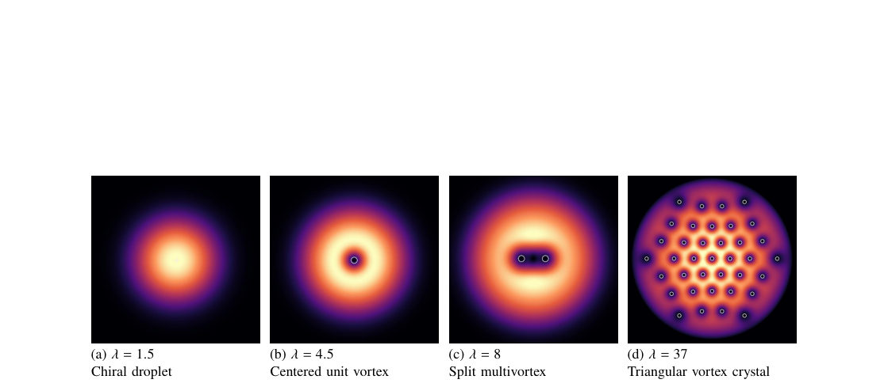
<figcaption class="paper-figure-caption"><b>Fig 1.</b> Figure 1: A schematic summary of the phases found in the double-scaling limit (1.3): (a) The chiral zero-vortex solution at 𝜆= 1.50. (This state is known exactly to all orders in the 1/𝑘expansion, as reviewed in the main body of the paper.) (b) A centered unit-vortex solution. (c) The split multivortex state (centered multivortices are unstable due to vortex–vortex repulsion). (d) The large-𝜆asymptotic triangular vortex crystal. The crystal is screened in the sense that, after coarse-graining over several unit cells, the vortex density approaches the matter density. The unscreened component is depleted in the bulk and survives predominantly near the edge at finite 𝜆.</figcaption>
</figure>
<figure class="paper-figure-card">
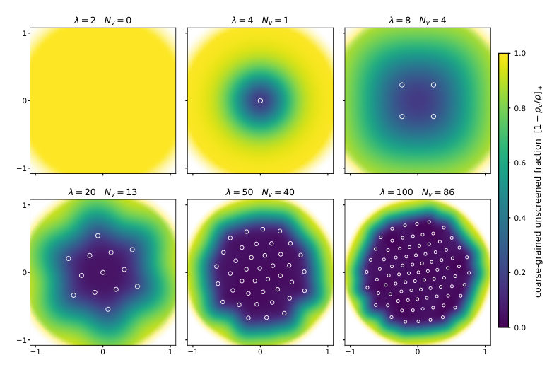
<figcaption class="paper-figure-caption"><b>Fig 2.</b> Figure 2: Screening in the harmonic trap. The yellow color is the coarse-grained unscreened fraction 1 −𝜌𝑣/ ¯𝜌. White rings mark the vortices. As 𝜆grows, the unscreened component is depleted in the bulk and survives mainly near the edge. We can see that the number of vortices approaches 𝜆, albeit not very quickly, mostly due to edge effects.</figcaption>
</figure>
<figure class="paper-figure-card">
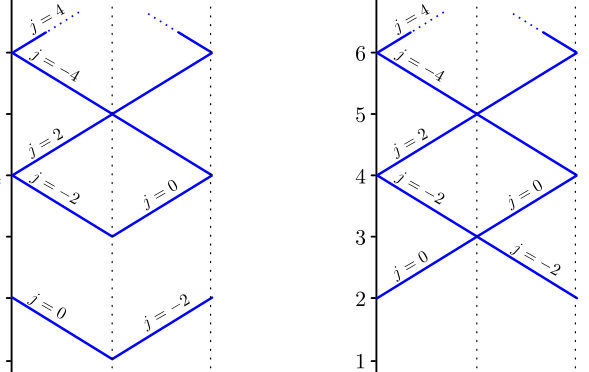
<figcaption class="paper-figure-caption"><b>Fig 3.</b> Figure 3: Spectrum of the two-particle sector. Here 𝑗= 2𝑛is the relative orbital angular momentum.</figcaption>
</figure>
<figure class="paper-figure-card">
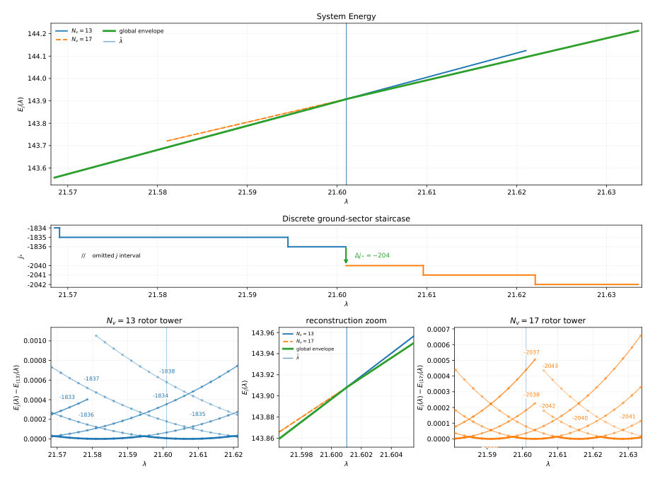
<figcaption class="paper-figure-caption"><b>Fig 4.</b> Figure 4: Some crossings around 𝜆= 21 for a system of 𝑁= 200 anyons. Around 𝜆≈21.6, the system undergoes a first-order phase transition from 𝑁𝑣= 13 to 𝑁𝑣= 17, and the angular momentum 𝑗∗jumps by |Δ𝑗∗| = 204. Within each phase, adjacent rotor modes cross with |Δ𝑗∗| = 1.</figcaption>
</figure>
</div>

<p><strong>Summary.</strong> This work analyzes the phase diagram of an anyon gas, predicting a quantum phase transition between a crystalline state and a superfluid state. By studying the effective Hamiltonian in the large $k$ limit, the authors determine a critical value $k_c$ that contradicts common assumptions about anyon superfluidity. The findings are significant for understanding strongly correlated quantum matter systems.</p>
<p><strong>Why it may be interesting.</strong> The study of anyons and their phase transitions provides a theoretical framework relevant to strongly correlated electron systems, such as fractional quantum Hall states, which are key topics in condensed matter theory.</p>
<details>
<summary>Detailed structure</summary>
<p><strong>Main problem.</strong> The paper revisits the long-standing problem of the anyon gas, specifically investigating the quantum phase transition between crystalline and superfluid states.</p>
<p><strong>Main result.</strong> The system undergoes a quantum phase transition at a critical parameter $k_c \simeq 2-5$, implying that an anyon gas with only statistical interactions is not necessarily a superfluid.</p>
<p><strong>Method.</strong> The analysis employs a double-scaling limit, semiclassical saddle-point methods, and Renormalization Group (RG) analysis of the effective Hamiltonian derived from a Chern-Simons action.</p>
<p><strong>Model / system.</strong> The system models anyons (particles with fractional statistics $    heta = \pi/k$) at fixed density $\lambda = N/k$, described by an effective Hamiltonian involving density and phase variables.</p>
<p><strong>Key observables.</strong> Unit-cell size, ground-state energy, acoustic excitations, and the critical value $k_c$ separating the two phases.</p>
<p><strong>Important parameters / regimes.</strong> The statistical parameter $k$, the density parameter $\lambda = N/k$, and the critical value $k_c$.</p>
<p><strong>Assumptions / limitations.</strong> The analysis relies on the large $k$ limit (semiclassical expansion) and assumes the system is at the infrared-stable fixed point of the RG flow.</p>
<p><strong>Figures summary.</strong> Figure 1 (mentioned) shows the sequence of classical saddles found by minimizing the energy functional as a function of the density parameter $\lambda$.</p>
<p><strong>Paper structure.</strong> The paper progresses by deriving the effective Hamiltonian, analyzing the energy minimization in different density regimes ($\lambda$), and finally establishing the quantum phase transition boundary using RG techniques.</p>
</details>
<details>
<summary>Abstract</summary>
<p>We revisit the long-standing problem of the anyon gas. We study the solvable near-bosonic limit of a large number of anyons $N$ at fixed $N/k$, where $1/k$ characterizes the statistical interaction. In this limit, the ground state is a crystal with order $N/k$ lattice sites. The statistical interactions, mediated by a long-range gauge field, are completely screened within the crystalline phase. The resulting state is a conventional crystal without superfluidity. We characterize this anyon crystal by determining its unit-cell size, ground-state energy, acoustic excitations, angular momentum crossings, and other properties.   Our results indicate a quantum phase transition between the crystal at $k>k_c$ and a superfluid at $k<k_c$, with a critical value $k_c\simeq2\text{--}5$. These results imply that an anyon gas with only statistical interactions is not necessarily a superfluid, contrary to common lore.   We also present a detailed analysis of the renormalization-group evolution of anyon--anyon interactions, identifying many new potential fixed points and elucidating finite-size effects.</p>
</details>
<p><sub><a href="#top">↑ back to top</a></sub></p>

<p><a id="paper-2609.25458"></a></p>
<h3 id="random-gaussian-augmented-matrix-product-states"><a href="http://arxiv.org/abs/2609.25458v1">Random Gaussian Augmented Matrix Product States</a></h3>
<p><strong>Authors:</strong> Stavya Puri, Poetri Sonya Tarabunga, Piotr Sierant<br>
<strong>Type:</strong> theory · <strong>Category:</strong> other · <strong>PDF:</strong> <a href="https://arxiv.org/pdf/2609.25458v1">https://arxiv.org/pdf/2609.25458v1</a><br>
<strong>Analysis basis:</strong> full PDF text, analyzed in chunks
<strong>Topic relevance:</strong> <code>analog quantum simulation</code> <strong>3/5</strong> · <code>Keldysh / 2PI / non-Gaussian methods</code> <strong>2/5</strong> · <code>methods for driven-dissipative</code> <strong>2/5</strong></p>
<div class="figure-strip-hint">↔ Scroll figures horizontally</div>
<div class="paper-figures-scroll">
<figure class="paper-figure-card">
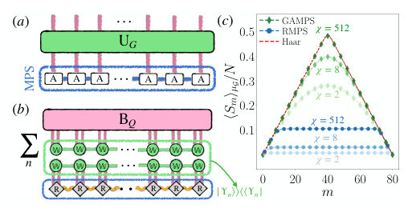
<figcaption class="paper-figure-caption"><b>Fig 1.</b> Figure 1. (a) GAMPS construction by applying a fermionic Gaussian unitary UG to an MPS. (b) Evaluation of ⟨Q⟩by contracting three layers: the averaged RMPS tensors, the fermionic commutant operators Γn, and the boundary opera- tor BQ. (c) Page curve for annealed R´enyi-2 entropy density ⟨Sm⟩/N versus subsystem size m for GAMPS and RMPS at N = 80 and varying χ. GAMPS exhibit near-Haar entangle- ment at modest χ.</figcaption>
</figure>
<figure class="paper-figure-card">
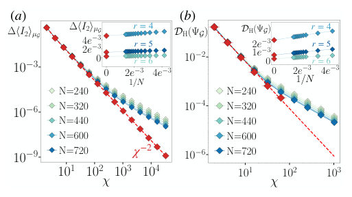
<figcaption class="paper-figure-caption"><b>Fig 2.</b> Figure 2. Anticoncentration and ϵ−approximate 2−design properties of GAMPS for N qubits. (a) The deviation of the ensemble-averaged second-order inverse participation ra- tio from the Haar value, ∆⟨I2⟩µG, exhibits the asymptotic scaling χ−2, with the inset depicting its thermodynamic-limit extrapolation. (b) The Trace distance DH(ΨG) also depicts a similar power-law asymptotic scaling of χ−2 corresponding to the extrapolation in N →∞limit (see inset).</figcaption>
</figure>
<figure class="paper-figure-card">
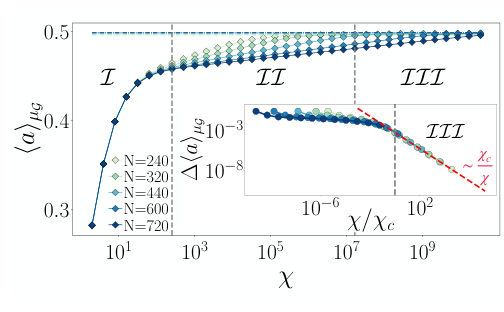
<figcaption class="paper-figure-caption"><b>Fig 3.</b> Figure 3. The half-chain R´enyi-2 entanglement entropy den- sity ⟨a⟩µG exhibits different behaviors in the three regimes determined by the bond dimension χ. The crossover bond dimension χc rescales the deviation ∆⟨a⟩µG = aHaar −⟨a⟩µG, collapsing the data to χc/χ and identifying regime III, where the entropy is within 10−3 of the Haar value (see inset).</figcaption>
</figure>
<figure class="paper-figure-card">
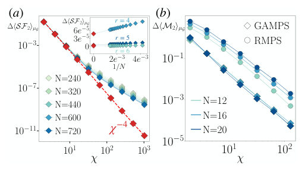
<figcaption class="paper-figure-caption"><b>Fig 4.</b> Figure 4. Second order state frame potential and the second order Stabilizer Renyi entropy for N qubits. (a) The devia- tion ∆⟨SF2⟩µG as a function of the bond dimension exhibits an asymptotic power-law χ−4 decay upon extrapolation to the thermodynamic limit (inset). (b) The second-order SRE of GAMPS remains consistently below that of RMPS by an approximately constant offset as the bond dimension χ in- creases while depicting a scaling independent of the system size unlike the RMPS.</figcaption>
</figure>
<figure class="paper-figure-card">
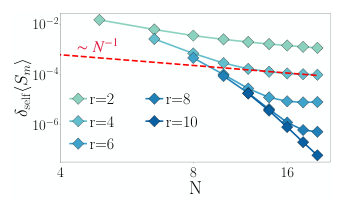
<figcaption class="paper-figure-caption"><b>Fig 5.</b> Figure 5. For GAMPS, the deviation between the quenched and annealed average R´enyi-2 entropies decreases with sys- tem size, exhibiting an asymptotic N −1 power-law decay for different values of r = log2 χ indicative of self-averaging.</figcaption>
</figure>
</div>

<p><strong>Summary.</strong> This work investigates Gaussian-augmented Matrix Product States (GAMPS) to understand how adding free-fermionic structure enhances the entanglement capacity of tensor networks. Using a replica tensor-network method, the authors show that random GAMPS rapidly achieve volume-law entanglement, requiring exponentially smaller bond dimensions than standard MPS to reach the same level of quantum resource saturation. This demonstrates a significant expansion in the expressive power of these tensor network descriptions.</p>
<p><strong>Why it may be interesting.</strong> The enhanced entanglement scaling and approach to Haar-random limits suggest that incorporating fermionic structure (Gaussian unitaries) provides a powerful, resource-efficient way to model highly entangled quantum states relevant to strongly correlated electron systems.</p>
<details>
<summary>Detailed structure</summary>
<p><strong>Main problem.</strong> The study aims to quantify how Gaussian augmentation expands the expressive power of Matrix Product States (MPS) by analyzing Gaussian-augmented Matrix Product States (GAMPS).</p>
<p><strong>Main result.</strong> Random GAMPS exhibit nearly maximal volume-law entanglement entropy even at modest bond dimension, suggesting an exponential reduction in bond dimension needed compared to unaugmented MPS.</p>
<p><strong>Method.</strong> The authors developed a replica tensor-network method to compute ensemble averages over random GAMPS, utilizing a two-copy density operator approach.</p>
<p><strong>Model / system.</strong> The system is modeled by random GAMPS, defined as $|\Psi_G
angle = U_G |\Phi_\chi
angle$, where $U_G$ is a fermionic Gaussian unitary and $|\Phi_\chi
angle$ is a random MPS.</p>
<p><strong>Key observables.</strong> Annealed Rényi-2 entanglement entropy density, Subsystem purity, second-order inverse participation ratio ($I_2$), and state two-design distance ($D_H$).</p>
<p><strong>Important parameters / regimes.</strong> Bond dimension ($\chi$), system size ($N$), and the crossover bond dimension ($\chi_c$).</p>
<p><strong>Assumptions / limitations.</strong> The analysis assumes the ability to compute averages using the quadratic dependence of the quantifiers on the density matrix $
ho_G$, and relies on the structure of the fermionic commutant for the Gaussian average.</p>
<p><strong>Figures summary.</strong> Figures illustrate the GAMPS construction, the contraction method for calculating averages, and show the Page curve demonstrating near-Haar entanglement at modest bond dimensions.</p>
<p><strong>Paper structure.</strong> The paper develops the replica tensor-network framework to calculate ensemble averages, analyzes the scaling of entanglement and resource quantifiers across three regimes based on bond dimension, and confirms the enhanced expressive power of GAMPS.</p>
</details>
<details>
<summary>Abstract</summary>
<p>Strong entanglement limits the reach of tensor-network descriptions of quantum many-body systems. We study Gaussian-augmented matrix product states (GAMPS), formed by applying a free-fermionic (Gaussian) unitary to a matrix product state. To explore the capabilities of this family, we consider random GAMPS}, a minimally structured ensemble obtained by independently sampling random matrix product states and Gaussian unitaries. Exploiting the algebraic structure of Gaussian unitaries, we develop a replica tensor-network method that computes averages over the random GAMPS ensemble for hundreds of qubits. Random GAMPS exhibit nearly maximal volume-law entanglement already at modest bond dimension, while other quantum resource quantifiers rapidly approach Haar-random state values as the bond dimension increases. The entanglement scaling suggests an exponential reduction in the bond dimension needed to approach the volume-law entropy compared with unaugmented matrix product states. We find a state two-design behavior of random GAMPS at fixed accuracy with a bond dimension independent of system size. Our results reveal how Gaussian augmentation expands the expressive power of tensor networks.</p>
</details>
<p><sub><a href="#top">↑ back to top</a></sub></p>

<p><a id="paper-2609.25861"></a></p>
<h3 id="universal-fidelity-law-for-linear-optical-entangling-gates"><a href="http://arxiv.org/abs/2609.25861v1">Universal Fidelity Law for Linear-Optical Entangling Gates</a></h3>
<p><strong>Authors:</strong> Haim Nakav, Ofer Firstenberg<br>
<strong>Type:</strong> both · <strong>Category:</strong> quantum information and computing · <strong>PDF:</strong> <a href="https://arxiv.org/pdf/2609.25861v1">https://arxiv.org/pdf/2609.25861v1</a><br>
<strong>Analysis basis:</strong> full PDF text, analyzed in chunks
<strong>Topic relevance:</strong> <code>interference shaping light</code> <strong>3/5</strong> · <code>quantum optics experiment</code> <strong>3/5</strong> · <code>QC/QI experiment</code> <strong>1/5</strong></p>
<div class="figure-strip-hint">↔ Scroll figures horizontally</div>
<div class="paper-figures-scroll">
<figure class="paper-figure-card">
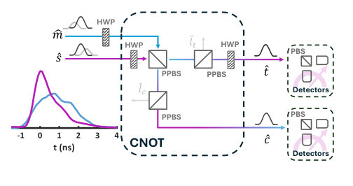
<figcaption class="paper-figure-caption"><b>Fig 1.</b> FIG. 1. Schematic of the interference-based CNOT gate. The memory photon ˆm (blue) carries the control qubit and the source photon ˆs (magenta) carries the target qubit, enter- ing with distinct temporal wavepackets whose partial overlap (bottom left) defines the indistinguishability η. Each chan- nel occasionally emits a second photon (faint), quantified by the measured autocorrelations g(2) m and g(2) s , the multipho- ton contribution analyzed in this work. A half-wave plate (HWP) prepares the control qubit, and three partially polar- izing beam splitters (PPBS) implement the gate’s two-photon interference. The two HWPs in the target channel apply the Hadamard operations required for the...</figcaption>
</figure>
<figure class="paper-figure-card">
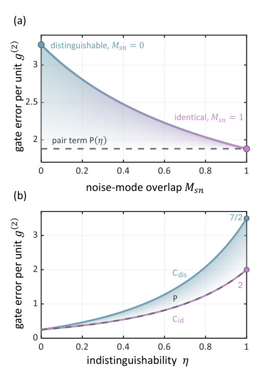
<figcaption class="paper-figure-caption"><b>Fig 2.</b> FIG. 2. Multiphoton gate error coefficient per unit g(2) of Eq. (20). (a) Gate error plotted against noise-mode over- lap Msn, at fixed indistinguishability η = 0.975. Markers indicate fully distinguishable (Msn = 0, teal) and identical (Msn = 1, pink) noise. The platform-independent pair co- efficient P(η) of Eq. (19) (dashed line) meets C(η, Msn) at Msn = 1. (b) Gate error plotted against indistinguishability η. The identical-noise coefficient Cid coincides with P. Both coefficients converge to 1/4 at η = 0. Markers denote the values Cid = P = 2 and Cdis = 7/2 at η = 1. In both panels, the shaded area represents the delivered brightness ¯n ∈[0, 1], ranging from the coefficient C down to P.</figcaption>
</figure>
<figure class="paper-figure-card">
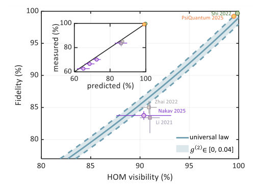
<figcaption class="paper-figure-caption"><b>Fig 3.</b> FIG. 3. Gate fidelity versus measured HOM visibility V . The theoretical curve, Eq. (26), is evaluated at g(2) = 0.02 and is common to all noise models. The shaded band spans the measured g(2) range of the experiments, from g(2) = 0 to g(2) = 0.04, with dashed curves marking the band edges. Markers show measured Bell-state fidelities [35, 36, 59] at the raw reported (V, g(2)) values, with no decoding step. Cir- cles denote identical noise, and squares denote distinguish- able noise. For non-PPBS circuits [9, 39], the law provides an indicative baseline rather than an exact bound. Every PPBS- class experiment falls on or below its source-limited bound. Inset: Measured versus predicted...</figcaption>
</figure>
<figure class="paper-figure-card">
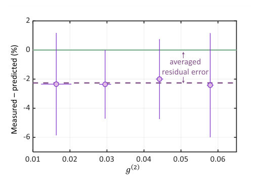
<figcaption class="paper-figure-caption"><b>Fig 4.</b> FIG. 4. Averaged residual error of our gate. The difference between measured and predicted fidelity (markers) is plotted against the measured g(2). We measured the HOM visibility V , the second-order coherence g(2), and the gate fidelity F via quantum state tomography in three separate experiments, all performed on the system described in Ref. [35]. As detailed in this prior work, the detection integration window sets the signal-to-noise ratio. Applying the same window across all three measurements provides a tunable knob to vary V , g(2), and the measured fidelity simultaneously. We use the mea- sured V and g(2) to compute the theoretical fidelity predic- tion, then take the difference...</figcaption>
</figure>
</div>

<p><strong>Summary.</strong> This paper derives a universal fidelity law for linear-optical entangling gates that accounts for noise from imperfect photon sources. By analyzing contributions from single, pair, and three-photon emissions, the authors show that the gate fidelity can be predicted using only measurable quantities like HOM visibility and second-order coherence. This provides a unified benchmark for advancing photonic quantum computing.</p>
<p><strong>Why it may be interesting.</strong> This work provides a crucial, platform-agnostic benchmark for characterizing and optimizing photonic quantum computing hardware, directly linking fundamental source statistics to gate performance.</p>
<details>
<summary>Detailed structure</summary>
<p><strong>Main problem.</strong> The performance of interference-based linear-optical entangling gates is degraded by imperfect photon sources, necessitating a universal fidelity law.</p>
<p><strong>Main result.</strong> The authors derive a universal fidelity law for these gates expressed solely in terms of measurable source metrics (HOM visibility and second-order coherence), independent of the specific physical platform.</p>
<p><strong>Method.</strong> The methodology involves deriving the two-qubit density matrix using coincidence operators and analyzing contributions from single, pair, and three-photon emission events.</p>
<p><strong>Model / system.</strong> The system is an interference-based CNOT gate implemented using linear-optical elements and single-photon sources (e.g., SPDC). The analysis models the gate operation using creation operators incorporating temporal wavepackets.</p>
<p><strong>Key observables.</strong> Gate Fidelity (F), Hong-Ou-Mandel (HOM) visibility (V), and second-order coherence ($g^{(2)}(0)$).</p>
<p><strong>Important parameters / regimes.</strong> Photon indistinguishability ($\eta$), signal-noise overlap parameter ($M_{sn}$), and emission-event weights ($w_x, r_x$).</p>
<p><strong>Assumptions / limitations.</strong> The initial derivation uses an approximation valid for at most two photons, though the framework extends to three-photon events. The universal law relies on expressing fidelity via measured quantities to absorb platform-specific noise origins.</p>
<p><strong>Figures summary.</strong> Figure 1 schematically illustrates the CNOT gate components and defines parameters like $\eta$ and $g^{(2)}$. Other figures/tables detail the coincidence matrices ($\sigma$) for different noise types and the derived visibility relations.</p>
<p><strong>Paper structure.</strong> The paper progresses from identifying the source of error (imperfect sources) to deriving the general fidelity expression by analyzing multi-photon contributions, culminating in the universal law that relates fidelity to measurable source parameters.</p>
</details>
<details>
<summary>Abstract</summary>
<p>Imperfect photon sources degrade the performance of interference-based linear-optical entangling gates. We derive a universal fidelity law for these gates in terms of two standard source metrics: Hong-Ou-Mandel visibility and second-order coherence. We model the multiphoton component as an arbitrary overlap between noise and signal photons. While different values of the signal-noise overlap produce different error structures, associated with different physical platforms, all result in the same fidelity law. We test the model on our actively synchronized CNOT-gate experiment and against published results across different platforms, with no free parameters. This framework turns source characterization into a unified benchmark for photonic quantum computing.</p>
</details>
<p><sub><a href="#top">↑ back to top</a></sub></p>

<p><a id="paper-2609.25262"></a></p>
<h3 id="a-quantum-phase-based-comparator"><a href="http://arxiv.org/abs/2609.25262v1">A Quantum Phase-based Comparator</a></h3>
<p><strong>Authors:</strong> Alessandro Berti, Alessandro Poggiali<br>
<strong>Type:</strong> theory · <strong>Category:</strong> quantum information and computing · <strong>PDF:</strong> <a href="https://arxiv.org/pdf/2609.25262v1">https://arxiv.org/pdf/2609.25262v1</a><br>
<strong>Analysis basis:</strong> full PDF text, analyzed in chunks
<strong>Topic relevance:</strong> <code>interference shaping light</code> <strong>3/5</strong> · <code>quantum measurements</code> <strong>3/5</strong></p>
<div class="figure-strip-hint">↔ Scroll figures horizontally</div>
<div class="paper-figures-scroll">
<figure class="paper-figure-card">
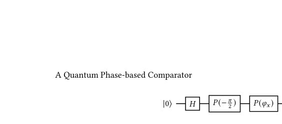
<figcaption class="paper-figure-caption"><b>Fig 1.</b> Fig. 1. Hard-coded values. The circuit realizes Theorem 1 with the two values written into the data gates 𝑃(𝜑𝑥) and 𝑃(−𝜑𝑦); the fixed gate 𝑃(−𝜋</figcaption>
</figure>
<figure class="paper-figure-card">
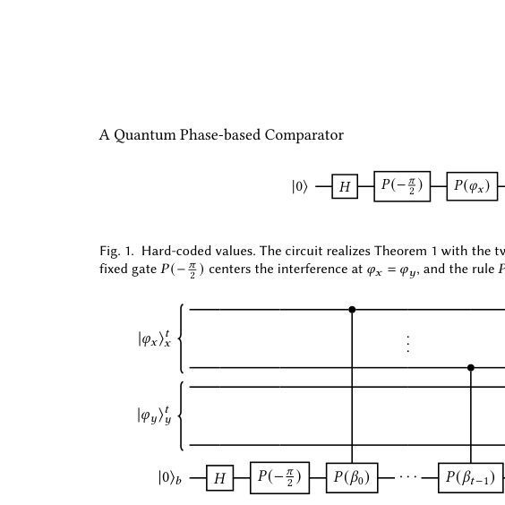
<figcaption class="paper-figure-caption"><b>Fig 2.</b> Fig. 2. Register-driven cascade. The circuit of Figure 1 with the two data gates replaced by cascades of controlled-phase gates (Lemma 1). Two 𝑡-qubit registers basis-encode the phases 𝜑𝑥= 𝑐(𝑥−𝑎) and 𝜑𝑦= 𝑐(𝑦−𝑎) and drive the cascades with the fixed angles ±𝛽𝑖= ±𝐴/2𝑖+1 over the angle range 𝐴of Section 3.1; the comparator qubit |0⟩𝑏carries the two Hadamard gates and the fixed 𝑃(−𝜋</figcaption>
</figure>
<figure class="paper-figure-card">

<figcaption class="paper-figure-caption"><b>Fig 3.</b> Fig. 3. Shots to decide 𝑥&lt; 𝑦at confidence 0.95 versus the separation |𝑥−𝑦|, on log–log axes. All three series count the same unit: a shot is one run of a circuit ending in one measurement. Plain sampling of the comparator grows like |𝑥−𝑦|−2, the exponent of the shot bound; estimating both angles by amplitude estimation is flatter in shots but pays for it in circuit depth, which the text reports separately; the adaptive powered readout on register phases is near-flat, its logarithmic count.</figcaption>
</figure>
<figure class="paper-figure-card">
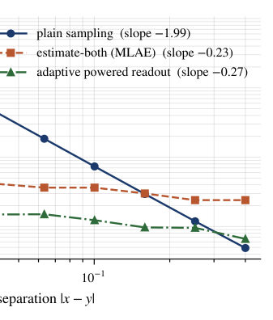
<figcaption class="paper-figure-caption"><b>Fig 4.</b> Figure 3 reports the mean number of shots needed to decide 𝑥&lt; 𝑦at confidence 0.95 as a function of the separation</figcaption>
</figure>
<figure class="paper-figure-card">
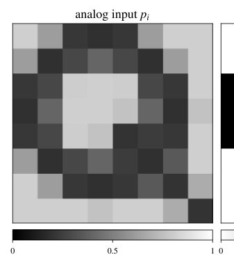
<figcaption class="paper-figure-caption"><b>Fig 5.</b> Fig. 4. Thresholding an image held in superposition. Left: analog input. Center: empirical per-shot decision accuracy per pixel. Right: binarization reconstructed from the quantum samples, identical to the classical reference.</figcaption>
</figure>
</div>

<p><strong>Summary.</strong> This paper proposes the Quantum Phase-based Comparator (QPC) to solve the quantum comparison problem by encoding inputs into relative phases rather than bit strings. It uses a phase interferometer structure, yielding a statistical readout that requires a number of shots scaling inversely with the separation. This method is advantageous for its ability to handle superpositions of pairs and its low depth scaling.</p>
<p><strong>Why it may be interesting.</strong> While the core mechanism is quantum circuit design, the reliance on phase estimation and interference patterns connects to quantum optics and measurement theory, which are relevant to AMO physics.</p>
<details>
<summary>Detailed structure</summary>
<p><strong>Main problem.</strong> The paper addresses the fundamental quantum computational task of determining the order ($x < y$) of two operands.</p>
<p><strong>Main result.</strong> It introduces the Quantum Phase-based Comparator (QPC), which achieves comparison by analyzing the interference pattern of phases rather than basis states.</p>
<p><strong>Method.</strong> The QPC utilizes a phase interferometer structure, where the probability of measuring zero is used to infer the relative order of the input phases.</p>
<p><strong>Model / system.</strong> The model is a quantum circuit implementing a phase interferometer on a single ancillary qubit, which is driven by two input phases ($\varphi_x$ and $-\varphi_y$). It can be implemented for hard-coded values or via a register-driven cascade.</p>
<p><strong>Key observables.</strong> The probability of measuring $|0
angle$, $P(|0
angle)$, which serves as a statistical readout (a biased coin) indicating the order.</p>
<p><strong>Important parameters / regimes.</strong> The required number of shots ($N$) scales inversely with the square of the phase separation ($\propto 1/\sin^2 d$), and the depth scales logarithmically with the inverse separation.</p>
<p><strong>Assumptions / limitations.</strong> The output is statistical, requiring multiple shots for a reliable decision, and the comparison is only guaranteed for phase separations within a certain margin.</p>
<p><strong>Figures summary.</strong> Figure 1 illustrates the circuit for hard-coded value comparison, while Figure 2 shows the register-driven cascade implementation allowing for superposition inputs.</p>
<p><strong>Paper structure.</strong> The paper first establishes the problem of quantum comparison, then details the physical model using the phase interferometer (Theorem 1), presents two implementations (hard-coded vs. cascade), and finally analyzes the statistical readout cost and scaling properties.</p>
</details>
<details>
<summary>Abstract</summary>
<p>Quantum comparators decide the order of two operands. They rely on reversible logic acting on basis-encoded integers, so their width grows with the precision. We introduce the Quantum Phase-based Comparator (QPC), which compares two values carried in relative phases instead. The circuit places the two phases, entered with opposite signs, between a pair of Hadamard gates, and a fixed offset centers the interference, so that the probability of measuring zero falls below one half exactly when the first phase is the smaller. We give two implementations. With hard-coded values, the two values are written into the parameters of two phase gates, and the comparison costs one qubit and five gates. With the register-driven cascade, the values are drawn from two $t$-qubit registers through binary-weighted controlled-phase gates, at a cost of one qubit beyond the registers and depth linear in $t$; since the cascade induces each phase linearly from the register content, one circuit handles a superposition of operand pairs. The readout yields a biased coin rather than a definite bit, and we quantify the shots that a decision takes at a given phase separation. Scaling both phases by an integer widens the decision margin at no cost in width or depth, and an adaptive doubling schedule turns this amplification into a shot count logarithmic in the inverse separation.</p>
</details>
<p><sub><a href="#top">↑ back to top</a></sub></p>

<p><a id="paper-2609.25714"></a></p>
<h3 id="enhanced-atomic-magnetometry-with-a-pinched-spin-state"><a href="http://arxiv.org/abs/2609.25714v1">Enhanced Atomic Magnetometry with a Pinched Spin State</a></h3>
<p><strong>Authors:</strong> Tingxuan Guo, Xiangyu Li, Yang Li, Kaifeng Zhao<br>
<strong>Type:</strong> both · <strong>Category:</strong> other · <strong>PDF:</strong> <a href="https://arxiv.org/pdf/2609.25714v1">https://arxiv.org/pdf/2609.25714v1</a><br>
<strong>Analysis basis:</strong> full PDF text, analyzed in chunks
<strong>Topic relevance:</strong> <code>quantum measurements</code> <strong>3/5</strong> · <code>methods for driven-dissipative</code> <strong>2/5</strong> · <code>Keldysh / 2PI / non-Gaussian methods</code> <strong>1/5</strong></p>
<div class="figure-strip-hint">↔ Scroll figures horizontally</div>
<div class="paper-figures-scroll">
<figure class="paper-figure-card">
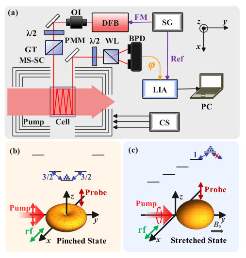
<figcaption class="paper-figure-caption"><b>Fig 1.</b> Figure 1. Principle of the rf magnetometer. (a): Experi- mental setup. The laser is frequency modulated (FM) by a signal generator (SG), whose sync signal is fed to the lock- in amplifier (LIA) as reference (Ref) for demodulation. OI: optical isolator, λ/2: half-wave plate, GT: Glan-Thompson prism, PMM: polarization-maintaining mirror, WL: Wollas- ton prism, BPD: balanced photo-detector, φ: optical rota- tion of the probe beam, CS: current source, MS-SC: mag- netic shield and static coils, PC: personal computer. (b) and (c): pump, probe and field configurations for the pinched and stretched states, respectively. The orange surface represents each state’s angular-momentum probability...</figcaption>
</figure>
<figure class="paper-figure-card">
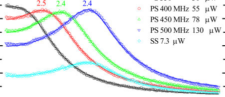
<figcaption class="paper-figure-caption"><b>Fig 2.</b> Figure 2. Comparison of the rf-field response between the pinched state (PS) and the stretched state (SS) by sweeping the same rf field (48.5 pTpk) along x from 0.5 to 152 Hz. The same 5 µW probe beam, far-detuned on the red wing of the Fa →F ′ b transition, detects ⟨Fx⟩via Faraday rotation. For the PS scheme, different combinations of power and detuning of the direct pump component are used to shift the resonance frequency while keeping resonance linewidth approximately constant. For the SS scheme, the power of the direct pump is adjusted to match the linewidth of the PS. For both states the power of the on-resonance indirect pump is 80 µW.</figcaption>
</figure>
<figure class="paper-figure-card">
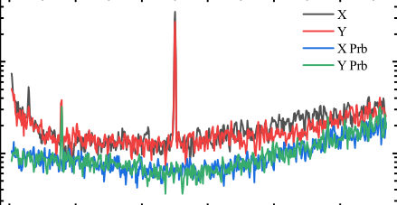
<figcaption class="paper-figure-caption"><b>Fig 3.</b> Figure 5. Noise spectrum of the magnetometer. The black and red lines represent the noise background for the x and y channels, respectively, in the absence of the calibration field. The blue and green lines respectively represent light noise for the x and y channels, which are taken by blue-detuning the frequency-modulation center of the laser 35 GHz from the D1 center while maintaining the same optical power. All data are taken at 23 ◦C and calibrated by the response curve measured in Fig. 4.</figcaption>
</figure>
<figure class="paper-figure-card">

<figcaption class="paper-figure-caption"><b>Fig 4.</b> Figure 3. Frequency-dependent field response of the single beam PS magnetometer at a fixed center detuning for different probe powers at 23 ◦C. The arrow indicates the location of the 3ΩTS resonance associated with the |2, ±1⟩↔|2, ±2⟩ transitions at insufficient pumping.</figcaption>
</figure>
<figure class="paper-figure-card">
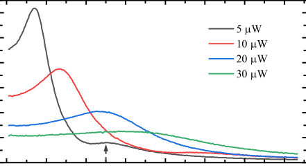
<figcaption class="paper-figure-caption"><b>Fig 5.</b> Figure 4. Frequency-dependent field response of the dual- axis configuration at 23 ◦C. Probe power is 22 µW, and the lower-frequency endpoint of the laser-frequency modulation is at least 400 MHz blue-detuned from the Fa →F ′ a transition.</figcaption>
</figure>
</div>

<p><strong>Summary.</strong> This paper details a method to significantly boost the sensitivity of atomic magnetometers by utilizing a specialized quantum state called the 'pinched spin state.' Theoretically, this state offers an $(F+1)$-fold improvement in magnetic-field response over conventional states. Experimentally, the authors successfully implemented this in a compact, room-temperature magnetometer, achieving state-of-the-art sensitivity.</p>
<p><strong>Why it may be interesting.</strong> This work directly addresses fundamental limits in quantum sensing by proposing a specific quantum state manipulation (pinched state) to surpass standard noise limitations, which is a core topic in quantum optics and AMO physics.</p>
<details>
<summary>Detailed structure</summary>
<p><strong>Main problem.</strong> The primary goal is to enhance the sensitivity of atomic spin sensors used for magnetic field measurement.</p>
<p><strong>Main result.</strong> The use of a 'pinched spin state' ($\left|F, 0
ight
angle$) theoretically provides an $(F+1)$-fold enhancement in magnetic-field response compared to the standard stretched state, which was experimentally demonstrated for $^{87}	ext{Rb}$ with a 2.7-fold enhancement.</p>
<p><strong>Method.</strong> The authors used theoretical modeling based on the density matrix master equation and performed experiments using a single-beam, dual-axis, zero-field RF magnetometer setup.</p>
<p><strong>Model / system.</strong> The system is an atomic spin sensor using $^{87}	ext{Rb}$ atoms, modeled by a Hamiltonian incorporating Zeeman splitting, a tensor light shift ($\propto F_z^2$), and a transverse RF drive. The dynamics are governed by the density matrix master equation.</p>
<p><strong>Key observables.</strong> RF-field response ($\langle F_x 
angle$), magnetic-field sensitivity ($ ext{fT}/\sqrt{  ext{Hz}}$), and the ratio of field responses between the pinched and stretched states.</p>
<p><strong>Important parameters / regimes.</strong> The key parameters include the spin quantum number $F$, the tensor light shift $\Omega_{TS}$, the relaxation rate $\Gamma$, and the operating frequency range ($3-100 	ext{ Hz}$).</p>
<p><strong>Assumptions / limitations.</strong> The ideal enhancement relies on engineering an RF spectrum symmetric about $m=0$, and the analysis often uses the weak-drive approximation.</p>
<p><strong>Figures summary.</strong> Figure 1 illustrates the experimental setup for both pinched and stretched state magnetometry. Figure 2 compares the RF-field response, showing the enhancement factor. Other figures detail the frequency dependence and noise spectra.</p>
<p><strong>Paper structure.</strong> The paper first establishes the theoretical advantage of the pinched state via QFI. It then derives the steady-state response equations for both states. The latter part details the experimental implementation in a compact cell, measuring the field response and noise floor.</p>
</details>
<details>
<summary>Abstract</summary>
<p>The sensitivity of an atomic spin sensor is fundamentally constrained by the quantum Fisher information (QFI) of the probe state. The pinched state, $|{F,0}\rangle$, has an $(F+1)$-fold larger single-particle QFI for transverse-field sensing than the stretched state, $|{F,F}\rangle$, corresponding to a predicted $\sqrt{F+1}$ reduction in the spin-projection-noise-limited field uncertainty. We show that this advantage can be accessed in an rf sensing scheme by engineering a spectrum symmetric about $m=0$, yielding an ideal $(F+1)$-fold enhancement of magnetic-field response. For $^{87}\mathrm{Rb}$ with $F=2$, we observe up to 2.7-fold response enhancement. Implementing this approach in a compact $0.8~\mathrm{cm}^3$ anti-relaxation-coated multipass cell, we realize a single-beam, dual-axis, zero-field magnetometer, achieving $13$--$23$~$\mathrm{fT}/\sqrt{\mathrm{Hz}}$ over $3$--$100$~Hz at room temperature.</p>
</details>
<p><sub><a href="#top">↑ back to top</a></sub></p>

<p><a id="paper-2609.26775"></a></p>
<h3 id="optical-ion-clock-with-engineered-immunity-to-motion-induced-frequency-shifts"><a href="http://arxiv.org/abs/2609.26775v1">Optical Ion Clock with Engineered Immunity to Motion-Induced Frequency Shifts</a></h3>
<p><strong>Authors:</strong> Mark Lide, Wesley Hardin, Christian Sanner<br>
<strong>Type:</strong> experiment · <strong>Category:</strong> other · <strong>PDF:</strong> <a href="https://arxiv.org/pdf/2609.26775v1">https://arxiv.org/pdf/2609.26775v1</a><br>
<strong>Analysis basis:</strong> full PDF text, analyzed in chunks
<strong>Topic relevance:</strong> <code>QC/QI experiment</code> <strong>3/5</strong> · <code>quantum measurements</code> <strong>2/5</strong> · <code>quantum optics experiment</code> <strong>1/5</strong></p>
<div class="figure-strip-hint">↔ Scroll figures horizontally</div>
<div class="paper-figures-scroll">
<figure class="paper-figure-card">
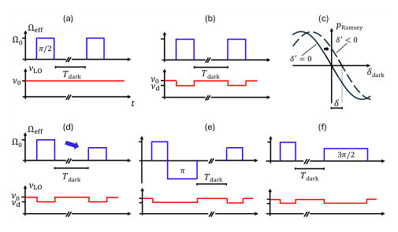
<figcaption class="paper-figure-caption"><b>Fig 1.</b> FIG. 1. Spectroscopic Ramsey interrogation sequences for auto-cancellation of motion-induced frequency shifts. The ef- fective Rabi frequency Ωeff (blue) and the local oscillator fre- quency νLO (red) are plotted against time for single coherent interrogations. Phase dithering for fringe derivative genera- tion [6] and other technical details are omitted for conceptual simplicity. (a) Standard Ramsey protocol with initialization and readout pulses of area π/2. (b) Ramsey protocol with phase-continuous drive pulse detuning. (c) Clock frequency error signal, i.e., differential spectroscopic Ramsey fringes pRamsey[δdark] = p[δdark + π/(2 Tdark)] −p[δdark −π/(2 Tdark)] derived from dithered...</figcaption>
</figure>
<figure class="paper-figure-card">
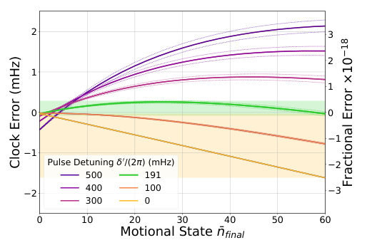
<figcaption class="paper-figure-caption"><b>Fig 2.</b> FIG. 2. Residual clock frequency shifts ∆νint + ∆νENGS cal- culated for the auto-cancellation sequence displayed in Fig. 1e as a function of ¯nfinal for a range of drive pulse detunings δ′/(2π) = νd −νrd. For the given trapping parameters and assuming a Ramsey dark time of Tdark = 150 ms and a π/2 pulse duration of π/(2 Ω0) = 23.9 ms, the model predicts sub- 10−18-level immunity to motion-induced frequency shifts for any final thermal motional state with 0 &lt; ¯nfinal &lt; 60, which corresponds to a heating rate range of 0 to 245 quanta/s. This shift suppression is achieved at a calculated optimal drive pulse detuning of δ′/(2π) = 191 mHz, which is maintained using an interleaved Rabi-Ramsey...</figcaption>
</figure>
<figure class="paper-figure-card">
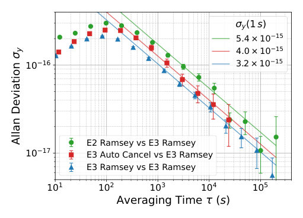
<figcaption class="paper-figure-caption"><b>Fig 3.</b> FIG. 3. Fractional frequency stability of the Yb+ E3 clock when operated in standard Ramsey (blue triangles) and auto- cancellation mode (red squares), and stability of the E3/E2 frequency ratio measurement (green circles). The clock com- parison runs are performed with a single trapped ion in in- terleaved operation against a standard Ramsey E3 interroga- tion protocol. The straight lines are τ −1/2 fits to the large- τ limit of the Allan deviation plots. Ramsey dark times were 150 ms for the E3 clocks and 50 ms for the E2 clock. For the auto-cancellation mode, a fractional clock stability of 2.1 × 10−15/√τ is inferred for non-interleaved E3 clock oper- ation.</figcaption>
</figure>
<figure class="paper-figure-card">
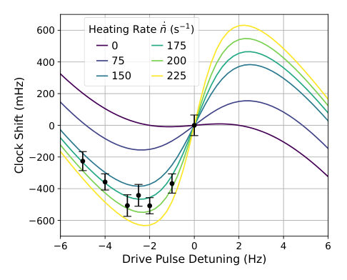
<figcaption class="paper-figure-caption"><b>Fig 4.</b> FIG. 4. Motional state characterization through clock fre- quency shift measurements. With the spectroscopic interro- gation sequence displayed in Fig. 1f, one can diagnose an ion’s motional excitation as a pronounced spectroscopic frequency shift. At the given Ramsey time of Tdark = 150 ms and as- suming thermal states and linear heating behavior, one can extract an ion heating rate ˙¯n by comparing clock frequencies at nonzero and zero drive pulse detunings.</figcaption>
</figure>
</div>

<p><strong>Summary.</strong> This paper details a novel spectroscopic interrogation protocol designed to suppress systematic frequency shifts caused by residual atomic motion in optical ion clocks. By engineering the interrogation sequence, the authors achieved a substantial reduction in the motion-induced uncertainty budget for a $  ext{Yb}^+$ clock. This improved precision allows for setting tighter limits on fundamental physical constants like the fine-structure constant.</p>
<p><strong>Why it may be interesting.</strong> This work represents a significant advancement in precision measurement techniques for quantum systems, directly addressing systematic noise sources (motion) in trapped-ion clocks using advanced quantum control sequences.</p>
<details>
<summary>Detailed structure</summary>
<p><strong>Main problem.</strong> Residual motion-induced frequency shifts significantly limit the uncertainty budgets of state-of-the-art optical ion clocks.</p>
<p><strong>Main result.</strong> The authors experimentally reduced the motion-induced systematic uncertainty contribution from $1.3	imes10^{-18}$ to $0.3	imes10^{-18}$ using a novel interrogation protocol.</p>
<p><strong>Method.</strong> They introduced a spectroscopic interrogation protocol, based on a Ramsey-style sequence with detuned pulses, to achieve first-order auto-suppression of motion-induced shifts.</p>
<p><strong>Model / system.</strong> The experiment uses a single laser-cooled ytterbium ion ($  ext{Yb}^+$) confined in an endcap radio-frequency Paul trap, probing the 467 nm electric octupole (E3) transition.</p>
<p><strong>Key observables.</strong> The primary observables are the residual clock frequency shift ($\Delta
u_{ ext{ENGS}}$) and the measured E3/E2 frequency ratio.</p>
<p><strong>Important parameters / regimes.</strong> The uncertainty reduction factor is key, moving from $1.3	imes10^{-18}$ to $0.3	imes10^{-18}$, and the resulting limit on the fine-structure constant variation is $2.4(2.7) 	imes 10^{-19}/$yr.</p>
<p><strong>Assumptions / limitations.</strong> The auto-cancellation scheme only provides first-order cancellation and does not correct for imperfect micromotion compensation.</p>
<p><strong>Figures summary.</strong> Figure 1 illustrates Ramsey interrogation sequences, while Figure 2 shows calculated residual clock frequency shifts versus the final motional state ($ar{n}_{	ext{final}}$) for various pulse detunings.</p>
<p><strong>Paper structure.</strong> The paper first establishes the problem of motion-induced shifts, then details the theoretical basis for the auto-suppression protocol using pulse engineering, presents the experimental implementation on $  ext{Yb}^+$, and concludes with the measured uncertainty reduction and fundamental constant limits.</p>
</details>
<details>
<summary>Abstract</summary>
<p>Spectroscopic frequency shifts due to residual motion of the probed atoms significantly contribute to the uncertainty budgets of state-of-the-art optical ion clocks. For clock transitions with second-order Doppler and quadratic Stark shifts of opposite signs, it is possible to configure electrodynamic ion confinement such that these two shift effects become anticorrelated causing zero net shift. Here, we introduce a spectroscopic interrogation protocol which leads, for systems with unknown and varying motional energy gain rates, to first-order auto-suppression of corresponding frequency shifts without requiring the opposite-sign configuration. We experimentally demonstrate the proposed method on a new ytterbium ion optical clock probing the 467 nm electric octupole (E3) transition, where the combined fractional uncertainty contribution from motion-induced frequency shifts is reduced from $1.3\times10^{-18}$ to $0.3\times10^{-18}$. An interleaved optical frequency ratio measurement against ytterbium's electric quadrupole transition (E2) at 435 nm delivers an E3/E2 frequency ratio of $0.932 \,829 \,404 \,530 \,965 \, 340 (39)$. Combined with previously published ratio data this leads to a limit for a potential fractional temporal variation of the fine-structure constant of $2.4 (2.7) \times 10^{-19}/$yr, in agreement with existing bounds.</p>
</details>
<p><sub><a href="#top">↑ back to top</a></sub></p>

<p><a id="paper-2609.25936"></a></p>
<h3 id="spin-orbit-mediated-magnetization-transfer-in-the-fermi-hubbard-model"><a href="http://arxiv.org/abs/2609.25936v1">Spin-Orbit-Mediated Magnetization Transfer in the Fermi-Hubbard Model</a></h3>
<p><strong>Authors:</strong> Jialiang Tang, Ruoqian Xu, Gloria Platero, Yue Ban, Xi Chen<br>
<strong>Type:</strong> theory · <strong>Category:</strong> strongly correlated electrons · <strong>PDF:</strong> <a href="https://arxiv.org/pdf/2609.25936v1">https://arxiv.org/pdf/2609.25936v1</a><br>
<strong>Analysis basis:</strong> full PDF text, analyzed in chunks
<strong>Topic relevance:</strong> <code>analog quantum simulation</code> <strong>3/5</strong> · <code>Keldysh / 2PI / non-Gaussian methods</code> <strong>1/5</strong> · <code>methods for driven-dissipative</code> <strong>1/5</strong> · <code>quantum measurements</code> <strong>1/5</strong></p>
<div class="figure-strip-hint">↔ Scroll figures horizontally</div>
<div class="paper-figures-scroll">
<figure class="paper-figure-card">
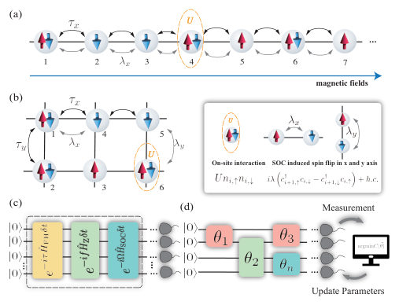
<figcaption class="paper-figure-caption"><b>Fig 1.</b> FIG. 1. Fermi–Hubbard models and control architecture. (a) One-dimensional chain with hopping τx, on-site interaction U, longitudinal Zeeman driving, and SOC-induced spin-flip hopping λx. (b) Two-dimensional lattice with hopping am- plitudes τx,y and SOC strengths λx,y along the two lattice directions. The inset highlights the on-site interaction and SOC-assisted spin-flip process. (c) Trotterized digital rep- resentation of the SOC-assisted dynamics in terms of hop- ping, interaction, Zeeman, and SOC evolution blocks. (d) Quantum–classical variational control loop, where measured observables are used to update the layer-dependent circuit pa- rameters θi.</figcaption>
</figure>
<figure class="paper-figure-card">
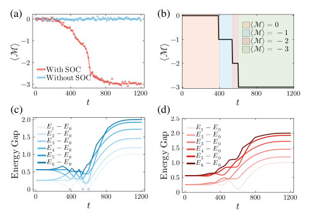
<figcaption class="paper-figure-caption"><b>Fig 2.</b> FIG. 2. (a) Magnetization dynamics along the reference ramp with and without SOC. Solid lines denote Hamiltonian evolu- tion, while symbols show the corresponding digitized dynam- ics. (b) Magnetization quantum number M for the instan- taneous ground state for λ(t) = 0, obtained by exact diag- onalization. (c,d) Instantaneous low-energy excitation spec- trum, En(t)−E0(t) for n = 1, . . . , 6, along the adiabatic path without and with SOC, respectively. Parameters: U = 7, λSOC = 1, and tf = 1200 for the adiabatic reference.</figcaption>
</figure>
<figure class="paper-figure-card">
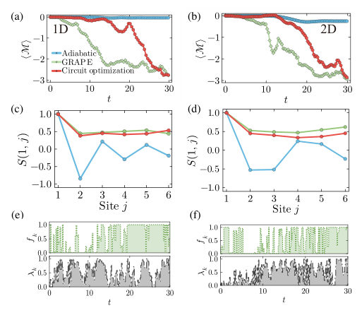
<figcaption class="paper-figure-caption"><b>Fig 3.</b> FIG. 3. Optimization of SOC-assisted magnetization-sector transfer in 1D (left column) and 2D (right column) FH sys- tems. (a),(b) Magnetization dynamics for the adiabatic evo- lution, GRAPE optimization, and optimized digital circuit. (c),(d) Final connected spin correlations, showing the conver- sion from antiferromagnetic to predominantly ferromagnetic correlations. (e),(f) GRAPE-optimized Zeeman and SOC am- plitudes fk and λk, with the FH parameters τ and U held fixed. For the 1D chain, NT = 150, δt = 0.2, and tf = 30; for the 2 × 3 lattice, NT = 200, δt = 0.15, and tf = 30.</figcaption>
</figure>
<figure class="paper-figure-card">
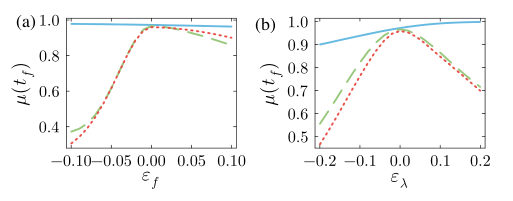
<figcaption class="paper-figure-caption"><b>Fig 4.</b> FIG. 4. Sensitivity to static calibration errors. The normal- ized final magnetization µ(tf) is shown for the adiabatic refer- ence (blue solid), GRAPE-optimized protocol (green dashed), and optimized variational circuit (red dotted) as a function of (a) the Zeeman amplitude error ϵf and (b) the SOC ampli- tude error ϵλ. In each scan, one control amplitude is rescaled while the other is kept at its calibrated value, and the control profiles are not reoptimized.</figcaption>
</figure>
</div>

<p><strong>Summary.</strong> This work demonstrates that transient spin-orbit coupling (SOC) can act as a catalyst to enable magnetization transfer in the Fermi-Hubbard model, overcoming limitations imposed by symmetry conservation. By applying quantum optimal control techniques like GRAPE, the researchers successfully accelerate this otherwise slow process in both 1D and 2D lattices.</p>
<p><strong>Why it may be interesting.</strong> The use of SOC as a tunable catalyst to bypass symmetry-protected dynamical bottlenecks is highly relevant for understanding non-equilibrium dynamics in strongly correlated quantum materials.</p>
<details>
<summary>Detailed structure</summary>
<p><strong>Main problem.</strong> The study addresses overcoming symmetry-imposed dynamical constraints that prevent the transfer of magnetization from an antiferromagnetically correlated state to a polarized ferromagnetic sector during a Zeeman ramp.</p>
<p><strong>Main result.</strong> Transient spin-orbit coupling (SOC) acts as a controllable catalyst, opening finite-gap pathways for this magnetization-sector transfer, which can be rapidly accelerated using quantum optimal control techniques.</p>
<p><strong>Method.</strong> The research employs quantum optimal control methods, specifically Gradient-Ascent Pulse Engineering (GRAPE) and Variational Quantum Circuits (VQC), to design time-dependent Hamiltonian controls.</p>
<p><strong>Model / system.</strong> The system is the spinful Fermi-Hubbard (FH) model, studied in 1D and 2D lattices at half-filling. The total Hamiltonian includes hopping, interaction, a Zeeman term, and a time-dependent SOC term.</p>
<p><strong>Key observables.</strong> Total magnetization ($\hat{M}$), final connected spin-spin correlations ($S(i, j)$), and the time required for magnetization transfer ($\mu(t)$).</p>
<p><strong>Important parameters / regimes.</strong> The SOC coupling ($\lambda(t)$) is the key control parameter, alongside the Zeeman ramp $f(t)$. Optimal control significantly reduces the transfer time from adiabatic timescales to much shorter, engineered timescales.</p>
<p><strong>Assumptions / limitations.</strong> The SOC control is treated as a normalized pulse envelope inherited from the Zeeman ramp, and the dynamics are analyzed using both time-evolution simulation and mapping to quantum circuits.</p>
<p><strong>Figures summary.</strong> Figures illustrate the control architecture, the sector-transfer mechanism showing gap closing (no SOC) versus avoided crossing (with SOC), and the resulting magnetization dynamics and final spin correlations.</p>
<p><strong>Paper structure.</strong> The paper first establishes the symmetry constraint in the FH model. It then introduces SOC as a catalyst. The core methodology involves applying quantum optimal control (GRAPE/VQC) to accelerate the transfer, demonstrating success in both 1D and 2D lattices.</p>
</details>
<details>
<summary>Abstract</summary>
<p>We demonstrate spin--orbit-coupling (SOC) catalysis of magnetization-sector transfer in the half-filled Fermi--Hubbard model. Without SOC, conservation of total magnetization confines the dynamics to the initial sector, preventing an antiferromagnetically correlated state from reaching the polarized ferromagnetic sector under a Zeeman ramp. A transient SOC control lifts this obstruction by coupling otherwise disconnected magnetization sectors and converting symmetry-protected crossings into avoided crossings, thereby opening a finite-gap pathway for magnetic-state conversion. We further accelerate the SOC-enabled dynamics beyond the adiabatic timescale using gradient-ascent pulse engineering (GRAPE) and a variational quantum circuit. Both approaches achieve rapid magnetization transfer in one- and two-dimensional Fermi--Hubbard lattices. Our results establish transient SOC as a controllable catalyst for overcoming symmetry-imposed dynamical constraints, while optimal control sets the timescale for the resulting magnetization-sector transfer.</p>
</details>
<p><sub><a href="#top">↑ back to top</a></sub></p>

<p><a id="paper-2609.25276"></a></p>
<h3 id="finite-state-automata-for-exact-matrix-product-operators-of-tight-binding-hamiltonians-fractals-quasicrystals-trees-and-hyperbolic-lattices"><a href="http://arxiv.org/abs/2609.25276v1">Finite-state automata for exact matrix product operators of tight-binding Hamiltonians: fractals, quasicrystals, trees and hyperbolic lattices</a></h3>
<p><strong>Authors:</strong> Marta Brzezińska, Jeanne Colbois, Loïc Herviou<br>
<strong>Type:</strong> theory · <strong>Category:</strong> numerical methods · <strong>PDF:</strong> <a href="https://arxiv.org/pdf/2609.25276v1">https://arxiv.org/pdf/2609.25276v1</a><br>
<strong>Analysis basis:</strong> full PDF text, analyzed in chunks
<strong>Topic relevance:</strong> <code>methods for driven-dissipative</code> <strong>3/5</strong> · <code>analog quantum simulation</code> <strong>2/5</strong></p>
<div class="figure-strip-hint">↔ Scroll figures horizontally</div>
<div class="paper-figures-scroll">
<figure class="paper-figure-card">
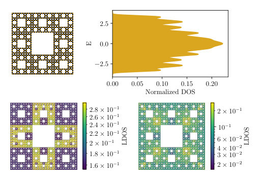
<figcaption class="paper-figure-caption"><b>Fig 1.</b> Figure 1. Top left: Sierpiński carpet at generation n = 3. Top right: normalized DOS calculated from a Chebyshev expan- sion up to moment M = 100 and n = 6, using a NN Hamil- tonian on the carpet (with Uunit hopping). Bottom: Repre- sentative LDOS maps at energies E = 0 (left) and E = 2.5 (right), computed with M = 55, showing similarly extended spatial distributions, albeit localized in different regions of the carpet.</figcaption>
</figure>
<figure class="paper-figure-card">
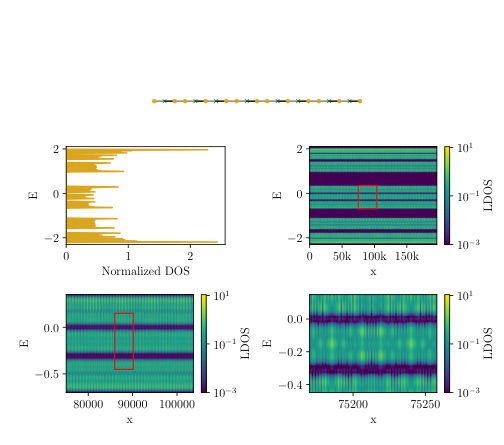
<figcaption class="paper-figure-caption"><b>Fig 2.</b> Figure 2. Top: Fibonacci chain at iteration n = 6. The two sites types, corresponding to 0 (gold circle) and 1 (green cross) in Eq. (22), are connected by two types of links, with t00 = t10 (gray) and t01 (black). This representation makes explicit the correspondence between the patterns of hopping amplitudes and on-site potentials. Center left: Normalized DOS for n = 25 generation, calculated from a Chebyshev expansion up to moment M = 1000. We set ϵ1 = −ϵ0 = 0.5 and tα,β = 1. Center right and bottom: Energy-resolved LDOS (M = 500) along the full chain, together with zoomed- in views of the central region of the chain around E = 0, highlighting the strongly inhomogeneous and quasiperiodic...</figcaption>
</figure>
<figure class="paper-figure-card">
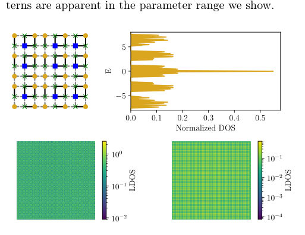
<figcaption class="paper-figure-caption"><b>Fig 3.</b> Figure 3. Top left: Two-dimensional Fibonacci lattice gener- ated from the one-dimensional Fibonacci chain, at iteration 5. The four types of sites indicated by different colors and sym- bols. The hoppings follow the same convention as in Fig. 2. Top right: Normalized DOS obtained for a Fibonacci square at generation n = 12 (142 129 sites), for εα,β = 0 and t01 = 3, t00 = t10 = 1, using the KPM expansion up to M = 1000. Bottom: the corresponding LDOS at E = 0 (left) and E = 3 (right) maps, revealing characteristic square-like spatial pat- terns, in a quasiperiodic ordering, with M = 500.</figcaption>
</figure>
<figure class="paper-figure-card">
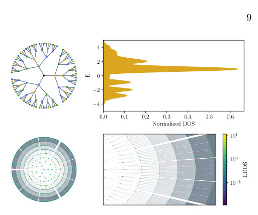
<figcaption class="paper-figure-caption"><b>Fig 4.</b> Figure 4. Top left: the 3-Cayley tree with unit NN hopping at iteration n = 4. At each depth, nodes of the same color have the same on-site potential. The central node is in black, with zero chemical-potential. Top right: DOS (M = 140) for a 3-Cayley tree at iteration 10, in the presence of disorder defined in Eq. (37), with disorder strength W = 3. Bottom: the corresponding local density of states at E = −2, with a zoom on iterations 3 to 9.</figcaption>
</figure>
<figure class="paper-figure-card">
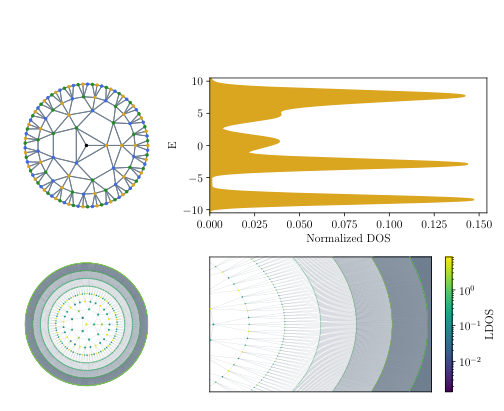
<figcaption class="paper-figure-caption"><b>Fig 5.</b> Figure 5. Top left: Graphical representation of an hyperbolic lattice following the convention of Fig. 4. Top right: the DOS (M = 68) for an hyperbolic lattice with unit NN hopping and disorder defined in Eq. (37) with disorder strength W = 9. Bottom: the corresponding LDOS.</figcaption>
</figure>
</div>

<p><strong>Summary.</strong> This paper introduces a novel method to exactly represent the Hamiltonian of tight-binding models on complex lattices (like fractals and hyperbolic spaces) as a Matrix Product Operator (MPO). By encoding the lattice geometry using a finite-state automaton, the method ensures the computational cost scales only logarithmically with system size. This allows for large-scale, analytical calculations of electronic properties across a vast range of structured materials.</p>
<p><strong>Why it may be interesting.</strong> This work provides a powerful, general computational framework for simulating electronic structure on geometrically complex systems that are difficult for standard methods, bridging geometry and tensor network efficiency.</p>
<details>
<summary>Detailed structure</summary>
<p><strong>Main problem.</strong> The paper aims to develop a systematic, exact, and analytical method to represent the Matrix Product Operator (MPO) for single-particle Hamiltonians on complex, recursively structured lattices.</p>
<p><strong>Main result.</strong> They achieve this by encoding the lattice geometry within a finite-state automaton, resulting in an MPO whose bond dimension grows only logarithmically with system size.</p>
<p><strong>Method.</strong> The core method combines finite-state automata to encode lattice structure with tensor network techniques (MPO) and utilizes the Kernel Polynomial Method (KPM) for spectral calculations.</p>
<p><strong>Model / system.</strong> The model is the tight-binding Hamiltonian, applied to a broad class of lattices including regular Bravais lattices, fractals (e.g., Sierpinski Carpet), quasiperiodic chains (e.g., Fibonacci), Cayley trees, and hyperbolic lattices.</p>
<p><strong>Key observables.</strong> Spectral properties, Density of States (DOS), and Local Density of States (LDOS).</p>
<p><strong>Important parameters / regimes.</strong> The bond dimension ($\chi$), which is determined by the number of automaton states and remains finite for these structured lattices.</p>
<p><strong>Assumptions / limitations.</strong> The framework critically relies on the recursive structure of the lattices to ensure the automaton state space, and thus the bond dimension, remains finite and manageable.</p>
<p><strong>Figures summary.</strong> Figure 6 illustrates the evolution of the MPO bond dimensions versus the number of iterations for various lattice types, showing differences in growth rates.</p>
<p><strong>Paper structure.</strong> The paper is structured to first introduce the general formalism (Section II), followed by detailed constructions for specific lattice types: regular, fractal, quasiperiodic, and hyperbolic lattices.</p>
</details>
<details>
<summary>Abstract</summary>
<p>Inspired by the recent progress in the simulation of tight-binding Hamiltonians on large lattices using tensor networks, we introduce a systematic matrix product operator (MPO) construction for single-particle Hamiltonians on recursively structured lattices. Taking advantage of this recursive structure, we encode the lattice geometry in a finite-state automaton and, adapting ideas from Abelian-symmetric tensor networks, obtain an exact and analytical MPO representation of the Hamiltonian, where the number of tensors grows logarithmically with the system size and the bond dimension is set by the number of automaton states. Several examples demonstrate the generality of the framework: regular lattices, fractals, Cayley trees, hyperbolic lattices, and one- and two-dimensional Fibonacci quasicrystals. Combined with the kernel polynomial method, these MPO representations enable large-scale calculations of spectral properties without explicitly constructing the full Hamiltonian. This provides a unified route to the exploration of electronic properties across a broad class of lattices at exponentially large system sizes.</p>
</details>
<p><sub><a href="#top">↑ back to top</a></sub></p>

<p><a id="paper-2609.26596"></a></p>
<h3 id="hamiltonian-learning-and-certification-via-eigenphase-engineering"><a href="http://arxiv.org/abs/2609.26596v1">Hamiltonian Learning and Certification via Eigenphase Engineering</a></h3>
<p><strong>Authors:</strong> Myeongjin Shin, Yu Tong<br>
<strong>Type:</strong> theory · <strong>Category:</strong> quantum information and computing · <strong>PDF:</strong> <a href="https://arxiv.org/pdf/2609.26596v1">https://arxiv.org/pdf/2609.26596v1</a><br>
<strong>Analysis basis:</strong> full PDF text, analyzed in chunks
<strong>Topic relevance:</strong> <code>analog quantum simulation</code> <strong>3/5</strong> · <code>quantum measurements</code> <strong>2/5</strong></p>
<div class="figure-strip-hint">↔ Scroll figures horizontally</div>
<div class="paper-figures-scroll">
<figure class="paper-figure-card">
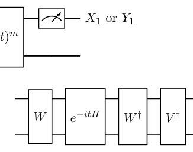
<figcaption class="paper-figure-caption"><b>Fig 1.</b> Figure 1: The quantum circuit of the energy gap estimation subroutine.</figcaption>
</figure>
</div>

<p><strong>Summary.</strong> This paper introduces 'eigenphase engineering,' a novel technique for learning unknown quantum Hamiltonians from time evolution data. It achieves state-of-the-art, Heisenberg-limited scaling for recovering Hamiltonian coefficients while maintaining a large, near-optimal time step size. This method is highly significant for quantum simulation as it allows for efficient characterization of complex quantum dynamics with minimal experimental overhead.</p>
<p><strong>Why it may be interesting.</strong> This work provides a powerful, resource-efficient protocol for characterizing the underlying physics (Hamiltonian) of a quantum system using only time evolution measurements, which is crucial for quantum simulation and control.</p>
<details>
<summary>Detailed structure</summary>
<p><strong>Main problem.</strong> The paper addresses the challenge of Hamiltonian learning: recovering the unknown Hamiltonian coefficients of a quantum system from limited measurements of its time evolution.</p>
<p><strong>Main result.</strong> The proposed 'eigenphase engineering' technique achieves Heisenberg-limited learning scaling while allowing for a near-maximal time step size, significantly improving efficiency over previous methods.</p>
<p><strong>Method.</strong> The method encodes energy expectation differences into the perturbative response of eigenphases, which are then extracted using phase estimation and high-order extrapolation.</p>
<p><strong>Model / system.</strong> The system is a quantum many-body system governed by a $k$-local, $s$-sparse Hamiltonian $H$, which is learned by observing the forward time evolution $U(t) = e^{-iHt}$ at fixed, discrete time steps.</p>
<p><strong>Key observables.</strong> Energy expectation differences ($\Delta H(x, y)$), Pauli coefficients ($\lambda_a$), and the fidelity of the recovered Hamiltonian ($\lVert \hat{oldsymbol{\lambda}} - oldsymbol{\lambda} 
Vert_2$).</p>
<p><strong>Important parameters / regimes.</strong> Sparsity ($s$), locality ($k$), operator norm bound ($\Lambda$), and desired estimation error ($\epsilon$).</p>
<p><strong>Assumptions / limitations.</strong> The Hamiltonian is assumed to be $k$-local and $s$-sparse. The analysis relies on the fixed-grid model using only forward time evolution at integer multiples of a fixed time interval $ au$.</p>
<p><strong>Figures summary.</strong> Not specified.</p>
<p><strong>Paper structure.</strong> The paper develops the technique by first establishing the core measurement principle (eigenphase engineering) and then applying it to solve the Hamiltonian learning problem, culminating in complexity bounds for coefficient recovery and certification.</p>
</details>
<details>
<summary>Abstract</summary>
<p>We study Hamiltonian learning for $k$-local Hamiltonians at large step size, using only forward time evolution at integer multiples of a fixed time interval. For this task, our new technique, which we call eigenphase engineering, achieves Heisenberg-limited learning with a step size that is optimal up to logarithmic factors. For an unknown $s$-sparse Hamiltonian with fixed locality $k$ and $\|H\|_{\mathrm{op}}\leqΛ$, our algorithm recovers its Pauli coefficients to $\ell_2$ error $\varepsilon$ in total evolution time $\widetilde{O}(s/\varepsilon)$, matching the best known scaling while allowing a near-maximal step size $\widetildeΘ(1/Λ)$. As an independent contribution, we strengthen the evolution-time lower bound to $Ω_k(s^{1-1/(2k)}/\varepsilon)$, placing our algorithm within a factor $\widetilde{O}(s^{1/(2k)})$ of being optimal. Eigenphase engineering departs from approaches based on dynamical approximation or iteratively canceling the unknown Hamiltonian. It encodes energy expectation differences in the perturbative response of eigenphases of the actual controlled evolution, then extracts them through phase estimation and high-order extrapolation. This avoids the need for polynomially shorter evolution steps as the target precision improves. A version using only single-qubit operations retains the same step size with a $\sqrt n$ overhead in $\ell_2$ learning time for $n$ qubits. The method also enables tolerant Hamiltonian certification and estimation of a specified Pauli coefficient, the latter without locality or sparsity assumptions. These results establish eigenphase engineering as a versatile approach to extracting Hamiltonian information with infrequent control.</p>
</details>
<p><sub><a href="#top">↑ back to top</a></sub></p>

<p><a id="paper-2609.25246"></a></p>
<h3 id="operator-score-matching-for-learning-quantum-hamiltonians"><a href="http://arxiv.org/abs/2609.25246v1">Operator Score Matching for Learning Quantum Hamiltonians</a></h3>
<p><strong>Authors:</strong> Shreya Shukla, Abhijith Jayakumar, Andrey Y. Lokhov<br>
<strong>Type:</strong> theory · <strong>Category:</strong> strongly correlated electrons · <strong>PDF:</strong> <a href="https://arxiv.org/pdf/2609.25246v1">https://arxiv.org/pdf/2609.25246v1</a><br>
<strong>Analysis basis:</strong> full PDF text, analyzed in chunks
<strong>Topic relevance:</strong> <code>analog quantum simulation</code> <strong>3/5</strong> · <code>Keldysh / 2PI / non-Gaussian methods</code> <strong>1/5</strong> · <code>methods for driven-dissipative</code> <strong>1/5</strong></p>
<div class="figure-strip-hint">↔ Scroll figures horizontally</div>
<div class="paper-figures-scroll">
<figure class="paper-figure-card">
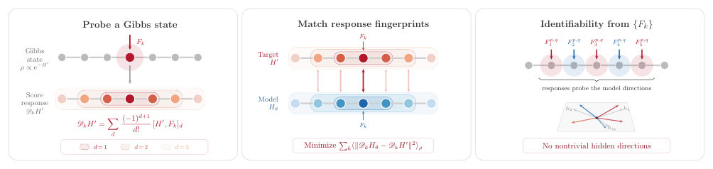
<figcaption class="paper-figure-caption"><b>Fig 1.</b> FIG. 1: Schematic of quantum score matching through local probes Fk. Left: A local kick generated by an operator Fk perturbs the Gibbs state ρ, producing a score response DkH′ that spreads around the lattice site with truncation depth d. Middle: Learning is performed by comparing the response fingerprints of the target Hamiltonian H′ and the model Hamiltonian Hθ under the same probes Fk and minimizing the discrepancy. Right: Identifiability is controlled by probe coverage: when the set {Fk} probes all nontrivial directions in the model class span{hi}, no hidden Hamiltonian direction remains invisible, and matching all responses determines Hθ up to an additive constant.</figcaption>
</figure>
<figure class="paper-figure-card">
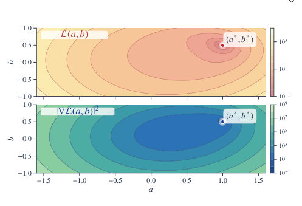
<figcaption class="paper-figure-caption"><b>Fig 2.</b> FIG. 2: Loss landscape for a single qubit with H = a σz + b σx. Top: Contour plot of the loss L(a, b). Bottom: Contour plot of the norm squared of the gradient, |∇L(a, b)|2. As is evident, this loss has a unique minimum at the true couplings (a∗, b∗) = (1.0, 0.5).</figcaption>
</figure>
<figure class="paper-figure-card">
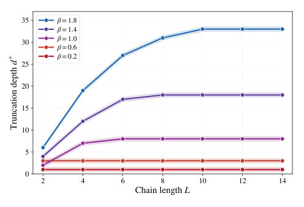
<figcaption class="paper-figure-caption"><b>Fig 3.</b> FIG. 3: Truncation behavior of operator score matching for the 1D TFIM.</figcaption>
</figure>
<figure class="paper-figure-card">
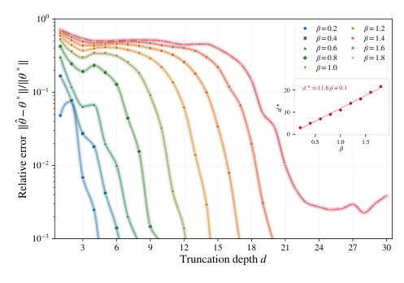
<figcaption class="paper-figure-caption"><b>Fig 4.</b> FIG. 4: Mean relative errors versus depth d for various values of β for the XXZ model with L = 4 sites, with an inset plot of the depth d∗required to reach a relative error of 1%. We find that the required depth d1% ∝β.</figcaption>
</figure>
<figure class="paper-figure-card">
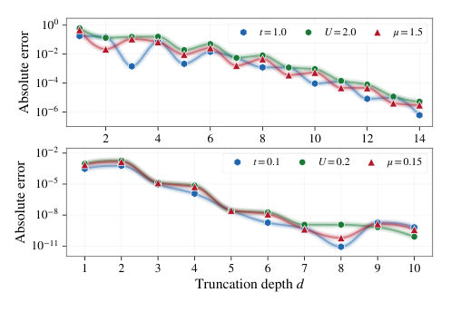
<figcaption class="paper-figure-caption"><b>Fig 5.</b> FIG. 5: Absolute errors in the parameters of the 1D Fermi–Hubbard model with L = 2 sites as a function of truncation degree d for two choices of exact parameters differing by a factor of 10. Top: (t, U, µ) = (1.0, 2.0, 1.5) Bottom: (t, U, µ) = (0.1, 0.2, 0.15).</figcaption>
</figure>
</div>

<p><strong>Summary.</strong> This paper introduces Operator Score Matching, a novel, partition-function-free technique to determine the Hamiltonian of a quantum system from its thermal state measurements. By adapting classical score matching to the language of operator algebras, it provides a robust and scalable framework for quantum Hamiltonian learning. This is particularly valuable for studying strongly correlated electron models where exact calculations are intractable.</p>
<p><strong>Why it may be interesting.</strong> This provides a powerful, computationally tractable alternative to traditional methods (like those relying on partition function calculations) for characterizing complex many-body Hamiltonians from limited experimental data.</p>
<details>
<summary>Detailed structure</summary>
<p><strong>Main problem.</strong> The core problem is learning the microscopic Hamiltonian (H) that governs a quantum system solely from measurements of its low-temperature thermal state ($
ho \propto e^{-H}$).</p>
<p><strong>Main result.</strong> The authors introduce Operator Score Matching, a partition-function-free framework that efficiently recovers Hamiltonian parameters using simple gradient descent.</p>
<p><strong>Method.</strong> They adapt classical score matching by developing a quantum analog using generalized derivatives and an integration-by-parts identity in operator algebras to construct a computable loss function.</p>
<p><strong>Model / system.</strong> The method is tested on various models, including the transverse-field Ising model, XXZ spin chain, Fermi-Hubbard model, and lattice $\phi^4$ theory, applicable to both spin and fermionic systems.</p>
<p><strong>Key observables.</strong> The operator score loss function, $L_{	ext{osm}}(	heta)$, which measures the difference between predicted and target operator scores.</p>
<p><strong>Important parameters / regimes.</strong> The inverse temperature ($eta$) and the depth ($d$) of the nested commutator expansion used for approximation are key parameters.</p>
<p><strong>Assumptions / limitations.</strong> The method assumes the existence of direction operators $\{F_k\}$ that generate the full algebra for unique Hamiltonian determination, and convergence relies on establishing a local Polyak-Łojasiewicz (PL) inequality.</p>
<p><strong>Paper structure.</strong> The paper builds from the fundamental problem of Hamiltonian learning, develops the Operator Score Matching loss function using algebraic identities, demonstrates its applicability across multiple physical models (Ising, Fermi-Hubbard), and concludes with convergence guarantees via the PL inequality.</p>
</details>
<details>
<summary>Abstract</summary>
<p>Learning quantum Hamiltonians from low-temperature thermal state measurements is a fundamental problem in quantum physics. Scalability of existing methods is limited by the complexity of semidefinite optimization problems or partition function computation. Here, we develop a quantum analog of classical score matching method that exploits generalized notions of derivatives and integration by parts in operator algebras. We introduce a new \emph{Operator Score Matching} loss function that recovers Hamiltonian parameters by a simple gradient descent without the need to compute intractable normalization constants. Numerical experiments on the Gibbs states of the transverse-field Ising model, XXZ spin chain, Fermi-Hubbard model, and lattice $φ^4$ theory demonstrate efficient parameter recovery using finite-depth truncations of nested commutator expansions. Our results establish Operator Score Matching as a practical, partition-function-free framework for quantum Hamiltonian learning.</p>
</details>
<p><sub><a href="#top">↑ back to top</a></sub></p>

<p><a id="paper-2609.25205"></a></p>
<h3 id="re-entrant-p-wave-superconductivity-in-a-chern-dartboard-insulator"><a href="http://arxiv.org/abs/2609.25205v1">Re-entrant p-wave superconductivity in a Chern Dartboard Insulator</a></h3>
<p><strong>Authors:</strong> Yueyang Wu, Rebecca Chan, Taylor L. Hughes, Philip W. Phillips<br>
<strong>Type:</strong> theory · <strong>Category:</strong> strongly correlated electrons · <strong>PDF:</strong> <a href="https://arxiv.org/pdf/2609.25205v1">https://arxiv.org/pdf/2609.25205v1</a><br>
<strong>Analysis basis:</strong> full PDF text, analyzed in chunks
<strong>Topic relevance:</strong> <code>Keldysh / 2PI / non-Gaussian methods</code> <strong>3/5</strong> · <code>analog quantum simulation</code> <strong>1/5</strong> · <code>methods for driven-dissipative</code> <strong>1/5</strong></p>
<div class="figure-strip-hint">↔ Scroll figures horizontally</div>
<div class="paper-figures-scroll">
<figure class="paper-figure-card">
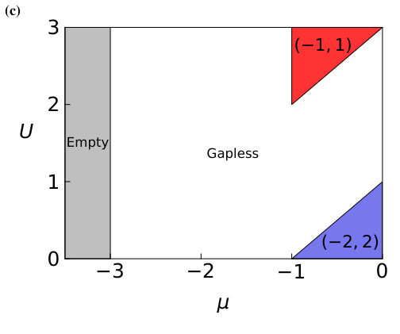
<figcaption class="paper-figure-caption"><b>Fig 1.</b> FIG. 1. (a) The bands of our CDI + HK system along the ky = 0 line for U = 0. We set the chemical potential µ = 0 so that it resides in the band gap. Without a large enough pairing strength g, the system insulates. (b) The single-particle Green’s function poles of our CDI + HK system along the ky = 0 line when U &gt; 0. The chemical potential µ is still at 0, but the HK interaction creates the UHBs, thus µ now touches one of these interaction-induced bands. BCS pairs can now obtain more easily than in the case in (a), thereby leading to superconductivity. (c) Phase diagram of CDI + HK system at T = 0. Gapped, incompressible, insulating phases are labeled by their reduced Chern numbers (N a r ,...</figcaption>
</figure>
<figure class="paper-figure-card">
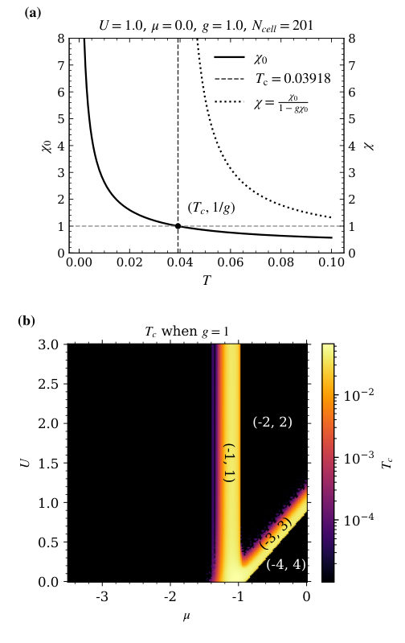
<figcaption class="paper-figure-caption"><b>Fig 2.</b> FIG. 2. (a) The bare and full pairing susceptibilities χ0, and χ, respectively as a function of T. Here we chose U = 1 and µ = 0, and set pairing strength g = 1. The divergence of χ0 as T →0 and χ as T →Tc confirm the superconducting phase. (b) The phase diagram of the critical temperature Tc in our CDSC-HK model for g = 1. Again the number pairs in different regions label the superconducting sBZ Chern numbers (N a r , N b r ) of our model.</figcaption>
</figure>
<figure class="paper-figure-card">
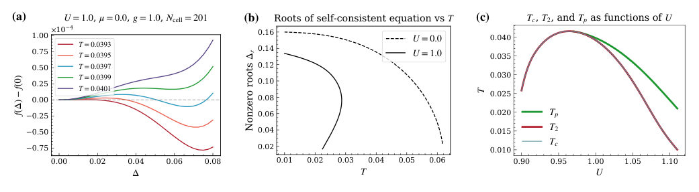
<figcaption class="paper-figure-caption"><b>Fig 3.</b> FIG. 3. (a) The shifted free energy, f, per unit volume, as a function of the average pairing amplitude ∆at different temperatures (shifted by subtracting f(0) for all the free energy curves to make sure they start from 0). The chemical potential µ is set to 0, the HK interaction strength U = 1, and the pairing strength g = 1. T varies from 0.033 to 0.042, and the system size is chosen as 201 by 201 cells. Clearly shown is the first-order nature for the turn-on of the pairing gap, ∆. (b) The solution to the self-consistent equation as a function of T. The chemical potential, µ is the same as in (a). Though the momentum grid here is decreased to 21 by 21 for faster convergence, no...</figcaption>
</figure>
<figure class="paper-figure-card">
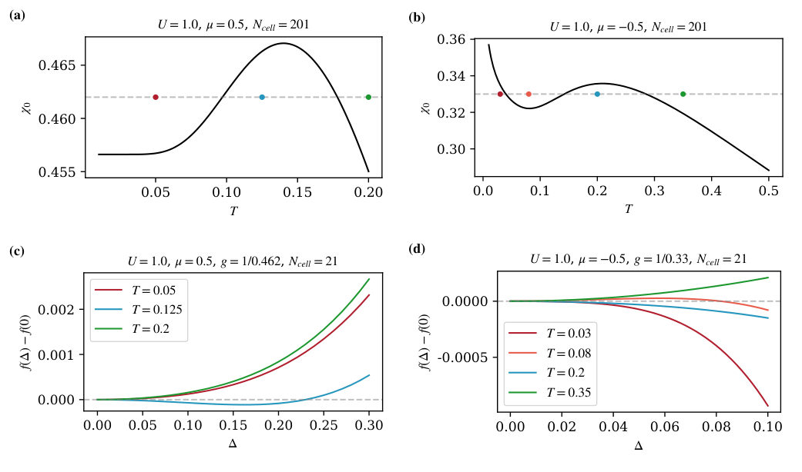
<figcaption class="paper-figure-caption"><b>Fig 4.</b> FIG. 4. (a), (c) The behavior of χ0(T) as a function of temperature for µ = 0.5 and U = 1.0. A peak in χ0 is followed by a subsequent decrease. The corresponding free-energy in (c) at the temperatures corresponds to the three dots shown in (a), which illustrates that only the blue dot yields a superconductor. The green and red are insulating, hence there is an insulator-superconductor-insulator transition. (b), (d) The behavior of χ0(T) for µ = −0.5 and U = 1.0. The peak in χ0 is followed by a subsequent decrease then increase again. The corresponding free-energy (d) at the temperatures corresponds to the four dots shown in (b), which illustrates that the red and blue dots yield a...</figcaption>
</figure>
<figure class="paper-figure-card">
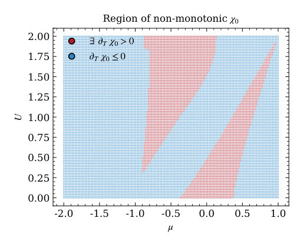
<figcaption class="paper-figure-caption"><b>Fig 5.</b> FIG. 5. Phase diagram for non-monotonic χ0 of CDSC-HK system. The blue dots denote χ0(T)’s having first derivatives with respect to T that are always ≤0 at those (U, µ) values, while the red dots denote χ0(T)’s where their first derivatives with respect to T can be &gt; 0. Thus the red areas indicate χ0’s with non-monotonic behavior.</figcaption>
</figure>
</div>

<p><strong>Summary.</strong> This theoretical work analyzes superconductivity in a Chern Dartboard Insulator coupled with strong electron-electron interactions (HK coupling). The authors demonstrate that these interactions can induce superconductivity even in insulating regimes and predict a unique re-entrant superconducting phase. The mechanism hinges on the non-monotonic temperature dependence of the pairing susceptibility, a signature of the combined effects of correlation and pairing.</p>
<p><strong>Why it may be interesting.</strong> The mechanism of re-entrance arising from the non-monotonic temperature dependence of the pairing susceptibility, driven by both correlation (HK) and pairing terms, offers insights into complex superconducting phase diagrams beyond simple BCS predictions.</p>
<details>
<summary>Detailed structure</summary>
<p><strong>Main problem.</strong> The study investigates the emergence of re-entrant p-wave superconductivity in a Chern Dartboard Insulator (CDI) when strong electron-electron interactions are included.</p>
<p><strong>Main result.</strong> The system exhibits a novel insulator-superconductor-insulator re-entrant transition, which is attributed to the confluence of Hund's coupling (HK) interactions and inter-orbital pairing terms.</p>
<p><strong>Method.</strong> The authors employ an exact theoretical formulation using a 2-band generalization of the Hatsugai-Kohmoto model, calculating the pair susceptibility via Dyson equations and mean-field theory.</p>
<p><strong>Model / system.</strong> The model is a 2-band superconductor built upon the Chern Dartboard Insulator (CDI) platform, incorporating both inter-orbital pairing and band Hatsugai-Kohmoto (HK) interactions.</p>
<p><strong>Key observables.</strong> Pair susceptibility ($\chi$), superconducting critical temperature ($T_c$), and the existence of re-entrant transitions in the phase diagram.</p>
<p><strong>Important parameters / regimes.</strong> HK interaction strength ($U$), chemical potential ($\mu$), and pairing strength ($g$).</p>
<p><strong>Assumptions / limitations.</strong> The analysis utilizes a $p$-wave pairing structure and relies on a 2-band generalization of the HK model Green function.</p>
<p><strong>Figures summary.</strong> Figures illustrate the band structure changes due to HK interaction, phase diagrams showing superconducting regions, and plots of the pairing susceptibility ($\chi_0(T)$) demonstrating non-monotonic behavior leading to re-entrance.</p>
<p><strong>Paper structure.</strong> The paper progresses by first establishing the model Hamiltonian and calculating the bare pairing susceptibility ($\chi_0$). It then uses mean-field theory to find the gap self-consistency, culminating in the detailed analysis of $\chi_0(T)$ to pinpoint the re-entrant transition mechanism.</p>
</details>
<details>
<summary>Abstract</summary>
<p>We formulate an exact theory for a 2-band superconductor with inter-orbital pairing and band Hatsugai-Kohmoto (HK) interactions. We apply this theory to a Chern dartboard insulator and compute the pair susceptibility and pair correlations analytically. We find that in the insulating phase previously predicted by BCS theory (small pairing strength $g$, chemical potential $μ$ in the gap), the HK interaction can induce superconductivity, and possibly a Chern dartboard superconductor, by lifting the doubly-occupied band and making it cross the chemical potential. From this HK-induced superconductor, we notice that in a significant parameter range (HK interaction strength $U = 1$, $μ= 0.5$), an insulator-superconductor-insulator re-entrant transition exists. We isolate the re-entrance to a conflation between HK interactions and inter-orbital pairings.</p>
</details>
<p><sub><a href="#top">↑ back to top</a></sub></p>

<p><a id="paper-2609.26703"></a></p>
<h3 id="real-frequency-diagrammatics-with-pole-representations"><a href="http://arxiv.org/abs/2609.26703v1">Real-Frequency Diagrammatics with Pole Representations</a></h3>
<p><strong>Authors:</strong> Rayan Farid, Lei Zhang, Aiman Al-Eryani, Agnieszka Jażdżewska, Emanuel Gull<br>
<strong>Type:</strong> theory · <strong>Category:</strong> strongly correlated electrons · <strong>PDF:</strong> <a href="https://arxiv.org/pdf/2609.26703v1">https://arxiv.org/pdf/2609.26703v1</a><br>
<strong>Analysis basis:</strong> full PDF text, analyzed in chunks
<strong>Topic relevance:</strong> <code>Keldysh / 2PI / non-Gaussian methods</code> <strong>3/5</strong> · <code>analog quantum simulation</code> <strong>1/5</strong> · <code>methods for driven-dissipative</code> <strong>1/5</strong></p>
<div class="figure-strip-hint">↔ Scroll figures horizontally</div>
<div class="paper-figures-scroll">
<figure class="paper-figure-card">
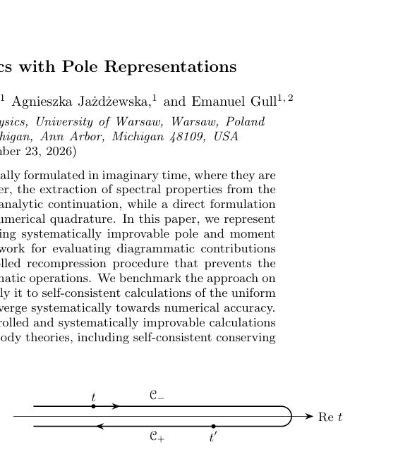
<figcaption class="paper-figure-caption"><b>Fig 1.</b> FIG. 1. Keldysh contour C = C−∪C+: the negative (chrono- logical) branch C−runs −∞→+∞, the positive (anti- chronological) branch C+ runs back +∞→−∞.</figcaption>
</figure>
<figure class="paper-figure-card">
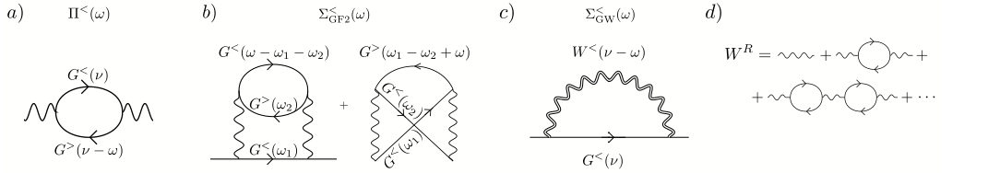
<figcaption class="paper-figure-caption"><b>Fig 2.</b> FIG. 2. Diagrammatic representation of diagrammatic building blocks. (a) Polarization bubble Π&lt;(t, t′). (b) Second-order GF2 contributions (direct and exchange terms) to the lesser self-energy Σ&lt; GF2(t, t′). (c) Dynamical GW self-energy Σ&lt; GW(t, t′) constructed from the Green’s function G&lt;(t, t′) and the screened interaction W &lt;(t, t′). (d) Diagrammatic expansion of the retarded screened interaction W R in polarization bubbles.</figcaption>
</figure>
<figure class="paper-figure-card">
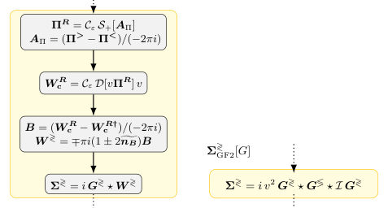
<figcaption class="paper-figure-caption"><b>Fig 3.</b> FIG. 5. Calculation of the greater and lesser self-energies in GW and GF2 within the pole representation.</figcaption>
</figure>
<figure class="paper-figure-card">
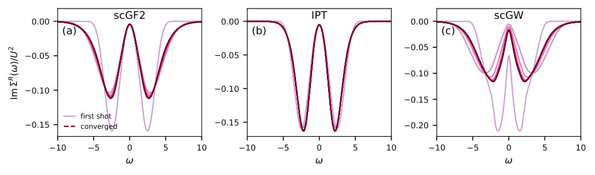
<figcaption class="paper-figure-caption"><b>Fig 4.</b> FIG. 6. Convergence of the self-consistent iterations for the retarded self-energy of an Anderson impurity model describing a local impurity with U/t = 2 coupled to a semicircular density of states at inverse temperature βt = 10. First iteration shown in light pink, subsequent iterations indicated by progressively darker shades. Number of poles determined by an adaptive recompression scheme to reach accuracy of 10−12. Panel (a): GF2 (b): DMFT IPT. (c): GW.</figcaption>
</figure>
<figure class="paper-figure-card">
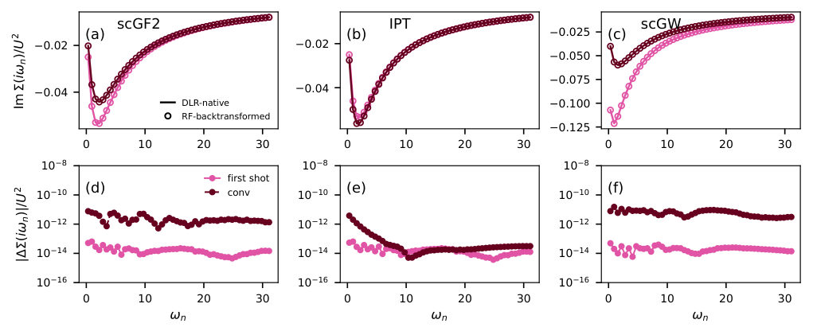
<figcaption class="paper-figure-caption"><b>Fig 5.</b> FIG. 7. Validation of the real-frequency results against independent Matsubara calculations, for the same choice of parameters as in Fig. 6. Top row: Im Σ(iωn) for (a) GF2, (b) IPT, and (c) GW at the first iteration (light pink) and for the converged solution (dark purple). Open circles represent the real-axis result back-transformed to imaginary frequency and solid lines are the Matsubara result with parameters ε = 10−14 and Λ = 80. Bottom row (d)–(f): absolute deviation |∆Σ(iωn)|/U 2 between the two calculations.</figcaption>
</figure>
</div>

<p><strong>Summary.</strong> This paper develops a novel theoretical framework to calculate spectral properties in many-body physics directly on the real frequency axis, circumventing the numerical instability of analytic continuation. It achieves this by representing Green's functions using systematically improvable pole expansions and defining algebraic rules for complex diagrammatic operations. This provides a robust, controlled tool for advanced calculations in correlated electron systems.</p>
<p><strong>Why it may be interesting.</strong> While focused on condensed matter, the rigorous mathematical framework for handling spectral functions via pole expansions is a powerful, general technique for any field requiring accurate spectral analysis, including those involving quantum optics or open systems.</p>
<details>
<summary>Detailed structure</summary>
<p><strong>Main problem.</strong> The primary challenge is extracting reliable spectral properties from finite-temperature many-body theories, as standard methods relying on analytic continuation from imaginary time are ill-conditioned.</p>
<p><strong>Main result.</strong> The authors introduce a practical, controlled, and systematically improvable framework to calculate spectral quantities directly on the real axis, bypassing the need for problematic analytic continuation.</p>
<p><strong>Method.</strong> The approach represents Green's functions using systematically improvable pole and moment expansions, developing algebraic rules for diagrammatic operations directly on these pole data tuples.</p>
<p><strong>Model / system.</strong> The theory applies to finite-temperature many-body systems, utilizing concepts from diagrammatic perturbation theory (like GW and GF2 self-energies) and the Keldysh formalism.</p>
<p><strong>Key observables.</strong> Spectral function ($A_X(\omega)$), retarded/advanced Green's functions ($G_R, G_A$), and self-energies ($\Sigma$).</p>
<p><strong>Important parameters / regimes.</strong> Finite temperature ($eta$), frequency ($\omega$), and the number of poles ($M_X$) used in the approximation.</p>
<p><strong>Assumptions / limitations.</strong> The method approximates continuous spectral features (branch cuts) by shifting poles into the complex plane, and it relies on a controlled recompression procedure to manage pole proliferation.</p>
<p><strong>Figures summary.</strong> Figures illustrate the Keldysh contour, diagrammatic building blocks, and the analytic structure of the spectral function showing poles and branch cuts. A key figure compares the convergence of convolution integrals calculated via pole representation versus numerical quadrature.</p>
<p><strong>Paper structure.</strong> The paper establishes the problem of real-axis spectral calculation, introduces the pole/moment expansion framework, details the algebraic rules for diagrammatic operations (convolution, product), and benchmarks the method on impurity models and the uniform electron gas.</p>
</details>
<details>
<summary>Abstract</summary>
<p>Finite-temperature many-body theories are typically formulated in imaginary time, where they are amenable to efficient numerical treatment. However, the extraction of spectral properties from the imaginary axis is difficult and requires numerical analytic continuation, while a direct formulation on the real axis requires prohibitively expensive numerical quadrature. In this paper, we represent the objects of many-body perturbation theory using systematically improvable pole and moment expansions and develop the corresponding framework for evaluating diagrammatic contributions directly on the real axis. We introduce a controlled recompression procedure that prevents the proliferation of poles under algebraic and diagrammatic operations. We benchmark the approach on paradigmatic quantum impurity problems and apply it to self-consistent calculations of the uniform electron gas. The resulting spectral quantities converge systematically towards numerical accuracy. This work provides a practical framework for controlled and systematically improvable calculations of spectral quantities within diagrammatic many-body theories, including self-consistent conserving approaches.</p>
</details>
<p><sub><a href="#top">↑ back to top</a></sub></p>

<p><a id="paper-2609.25641"></a></p>
<h3 id="when-quantum-meets-ai-quantum-methods-for-machine-learning-and-machine-learning-methods-for-quantum-systems"><a href="http://arxiv.org/abs/2609.25641v1">When Quantum Meets AI: Quantum Methods for Machine Learning and Machine Learning Methods for Quantum Systems</a></h3>
<p><strong>Authors:</strong> Tak Hur<br>
<strong>Type:</strong> both · <strong>Category:</strong> quantum information and computing · <strong>PDF:</strong> <a href="https://arxiv.org/pdf/2609.25641v1">https://arxiv.org/pdf/2609.25641v1</a><br>
<strong>Analysis basis:</strong> full PDF text, analyzed in chunks
<strong>Topic relevance:</strong> <code>QC/QI experiment</code> <strong>3/5</strong> · <code>methods for driven-dissipative</code> <strong>1/5</strong> · <code>quantum measurements</code> <strong>1/5</strong></p>
<div class="figure-strip-hint">↔ Scroll figures horizontally</div>
<div class="paper-figures-scroll">
<figure class="paper-figure-card">

<figcaption class="paper-figure-caption"><b>Fig 1.</b> Figure 1.1: Schematics of the two dominant paradigms in near-term quantum machine learning. (a) A quantum neural network uses a parameterized quantum circuit 𝑈(𝜃) trained via a classical optimizer. (b) A quantum kernel method uses a fixed quantum feature map to compute kernel entries, which are then processed by a classical algorithm such as an SVM.</figcaption>
</figure>
<figure class="paper-figure-card">

<figcaption class="paper-figure-caption"><b>Fig 2.</b> Figure 1.2: Schematic of a quantum convolutional neural network (QCNN). The circuit alter- nates between convolutional layers (two-qubit unitaries with shared parameters across neighbor- ing pairs) and pooling layers, until a small number of qubits remain for the final measurement.</figcaption>
</figure>
<figure class="paper-figure-card">

<figcaption class="paper-figure-caption"><b>Fig 3.</b> Figure 2.1: Trace distance between class-averaged data ensembles 𝐷tr(𝜌−, 𝜌+) for the conven- tional ZZ feature map and Neural Quantum Embedding on the balanced MNIST binary classifi- cation task (digits 0 vs. 1, 4 qubits). The blue dashed reference line indicates the trace distance obtained by the conventional ZZ feature map without NQE. Results obtained on IBM quantum hardware (ibmq_toronto).</figcaption>
</figure>
<figure class="paper-figure-card">

<figcaption class="paper-figure-caption"><b>Fig 4.</b> Figure 2.2: Overview of the NQE training procedure. A classical neural network 𝑔(x, w) trans- forms input data into rotation angles for the quantum embedding circuit 𝑉. The resulting quan- tum state |x⟩= 𝑉(𝑔(x, w)) |0⟩⊗𝑛is used to compute the implicit fidelity loss via an overlap circuit 𝑉†(𝑔(x𝑗, w)) 𝑉(𝑔(x𝑖, w)) |0⟩⊗𝑛by measuring the probability of the all-zero outcome. The clas- sical parameters w are updated to maximize the distinguishability between classes.</figcaption>
</figure>
<figure class="paper-figure-card">

<figcaption class="paper-figure-caption"><b>Fig 5.</b> Figure 2.3: QCNN training loss histories for balanced 4-qubit MNIST binary classification (dig- its 0 vs. 1). Blue solid, red dashed, and green dash-dotted lines represent the conventional ZZ fea- ture map, PCA-NQE, and NQE, respectively. Thick lines indicate the theoretical lower bounds from Equation (2.11). Shaded regions represent one standard deviation over five (noiseless) or three (noisy) independent trials. Left: noiseless simulation. Right: IBM quantum hardware (ibmq_jakarta, ibmq_toronto, ibmq_perth).</figcaption>
</figure>
</div>

<p><strong>Summary.</strong> This work explores the synergy between Quantum Machine Learning and AI for quantum systems. It introduces Neural Quantum Embedding (NQE) to enhance quantum classification by improving class separation in the embedding space. Additionally, it applies advanced ML models like Mamba to improve the decoding efficiency of quantum error correction codes.</p>
<p><strong>Why it may be interesting.</strong> The deep integration of ML theory (generalization bounds, representation learning) with fundamental quantum information tasks (classification, error correction) provides a powerful new toolkit for analyzing quantum hardware limitations and potential.</p>
<details>
<summary>Detailed structure</summary>
<p><strong>Main problem.</strong> The paper investigates the bidirectional intersection between quantum computing and artificial intelligence, developing quantum methods for machine learning and applying ML techniques to quantum systems.</p>
<p><strong>Main result.</strong> The proposed Neural Quantum Embedding (NQE) framework improves quantum classification performance and provides tighter generalization bounds compared to conventional quantum feature maps. Furthermore, Mamba decoders show promise for improving error correction decoding efficiency.</p>
<p><strong>Method.</strong> The work employs NQE, which trains quantum embeddings by optimizing an implicit fidelity loss, and applies advanced ML architectures like Mamba for quantum error correction decoding.</p>
<p><strong>Model / system.</strong> The study utilizes parameterized quantum circuits (QNNs), Quantum Error Correction (QEC) codes like Surface Codes, and various quantum feature maps (e.g., ZZ, XYZ). The work is demonstrated on platforms like NMR quantum processors.</p>
<p><strong>Key observables.</strong> Trace distance between class ensembles, classification accuracy, effective model complexity (ef-dimension), and logical error rates (LER) in QEC.</p>
<p><strong>Important parameters / regimes.</strong> Noise levels, code distance, learning rates (e.g., Adam LR 0.001), and the structure of the quantum Hamiltonian.</p>
<p><strong>Assumptions / limitations.</strong> The analysis relies on generalization bounds derived from Rademacher complexity and assumes the applicability of specific noise models for QEC decoding.</p>
<p><strong>Figures summary.</strong> Figures compare QNNs vs. Quantum Kernels, show NQE improving class separation (trace distance) on MNIST, and illustrate the Mamba decoder's performance relative to Transformers in QEC.</p>
<p><strong>Paper structure.</strong> The paper is structured around developing NQE for quantum classification, analyzing its generalization bounds using complexity theory, applying it to various feature maps, and separately addressing ML for QEC decoding and state estimation via Stochastic Reconfiguration.</p>
</details>
<details>
<summary>Abstract</summary>
<p>This thesis studies the intersection of quantum computing and artificial intelligence in two directions: quantum methods for machine learning and machine learning methods for quantum systems. For quantum machine learning, Neural Quantum Embedding learns data representations that increase the trace distance between embedded class ensembles, lowering an embedding-dependent bound on empirical risk and improving classification on noisy quantum hardware. A training objective based on the Hilbert-Schmidt inner product extends this approach to deterministic quantum computation with one qubit (DQC1) and is demonstrated on an NMR quantum processor. A margin-based generalization analysis then connects quantum neural network performance to quantum state discrimination. In the studied benchmarks, margin distributions predict generalization more reliably than parameter-count metrics. For quantum systems, a Mamba-based neural decoder for surface codes matches a reproduced Transformer baseline in memory experiments while reducing inference-cost scaling from quartic to quadratic in code distance. Under an explicit decoder-induced-noise model, it achieves lower logical error rates and a higher effective threshold. For neural quantum states, stochastic reconfiguration is interpreted as tangent-space ridge regression, with its diagonal shift controlling the bias-variance trade-off under finite Monte Carlo sampling. Multi-shift stochastic reconfiguration reduces checkpoint-local validation residuals and update variance relative to fixed-shift SR, at additional computational cost. Together, these contributions show how learned representations, statistical control, and hardware constraints shape the exchange between quantum computing and machine learning.</p>
</details>
<p><sub><a href="#top">↑ back to top</a></sub></p>

<p><a id="paper-2609.26031"></a></p>
<h3 id="beyond-expressiveness-in-pairwise-and-higher-order-models"><a href="http://arxiv.org/abs/2609.26031v1">Beyond expressiveness in pairwise and higher-order models</a></h3>
<p><strong>Authors:</strong> Cyril Rommens, Pietro Traversa, Guilherme Ferraz de Arruda, Yamir Moreno<br>
<strong>Type:</strong> theory · <strong>Category:</strong> statistical mechanics · <strong>PDF:</strong> <a href="https://arxiv.org/pdf/2609.26031v1">https://arxiv.org/pdf/2609.26031v1</a><br>
<strong>Analysis basis:</strong> full PDF text, analyzed in chunks
<strong>Topic relevance:</strong> <code>analog quantum simulation</code> <strong>3/5</strong> · <code>correlated / nonlocal dissipation</code> <strong>1/5</strong></p>
<div class="figure-strip-hint">↔ Scroll figures horizontally</div>
<div class="paper-figures-scroll">
<figure class="paper-figure-card">

<figcaption class="paper-figure-caption"><b>Fig 1.</b> Low-resolution page preview, page 2</figcaption>
</figure>
<figure class="paper-figure-card">

<figcaption class="paper-figure-caption"><b>Fig 2.</b> Low-resolution page preview, page 3</figcaption>
</figure>
<figure class="paper-figure-card">

<figcaption class="paper-figure-caption"><b>Fig 3.</b> Low-resolution page preview, page 4</figcaption>
</figure>
<figure class="paper-figure-card">

<figcaption class="paper-figure-caption"><b>Fig 4.</b> Low-resolution page preview, page 5</figcaption>
</figure>
<figure class="paper-figure-card">

<figcaption class="paper-figure-caption"><b>Fig 5.</b> Low-resolution page preview, page 6</figcaption>
</figure>
</div>

<p><strong>Summary.</strong> This theoretical paper critiques the common debate pitting pairwise (graph) versus higher-order (hypergraph) models in complex systems. It argues that functional equivalence does not imply structural necessity, proposing instead an operational Minimum-Description-Length criterion. The work establishes that the choice of model must be guided by explicit assumptions and data, not just the ability to reproduce observed dynamics.</p>
<p><strong>Why it may be interesting.</strong> While not explicitly quantum, the rigorous framework for distinguishing necessary structural complexity (hypergraphs) from merely emulated complexity (graphs) is highly relevant for modeling many-body quantum systems where interactions can be complex and non-pairwise.</p>
<details>
<summary>Detailed structure</summary>
<p><strong>Main problem.</strong> The paper addresses the fundamental debate over whether complex system dynamics are best described by pairwise (graph) or higher-order (hypergraph) interactions.</p>
<p><strong>Main result.</strong> The authors argue that 'expressiveness' alone is misleading; the choice of model depends on an operational Minimum-Description-Length criterion combining structural cost, rule cost, and model fit.</p>
<p><strong>Method.</strong> The comparison is formalized using algorithmic information theory, treating the problem as a description-length minimization, and analyzing the invariance of interaction order.</p>
<p><strong>Model / system.</strong> The models are general dynamical systems whose behavior is governed by interactions among components, represented either by pairwise graphs or higher-order hypergraphs.</p>
<p><strong>Key observables.</strong> Interaction order (pairwise vs. higher-order), structural projection cost (edge list length), and model fit/prediction error.</p>
<p><strong>Important parameters / regimes.</strong> Model class constraints, regularity assumptions, and the specific data used for fitting.</p>
<p><strong>Assumptions / limitations.</strong> The core assumption is that the debate must be reframed away from mere expressive power toward an operational, information-theoretic criterion.</p>
<p><strong>Figures summary.</strong> The notes mention schematic representations showing the transfer of grouping information from hypergraph structure to graph rules, and quantitative comparisons of structural size (e.g., edge list length).</p>
<p><strong>Paper structure.</strong> The paper distinguishes four conflated notions (structural projection, functional representability, statistical identifiability, mechanistic adequacy) before recasting the comparison into a minimum-description-length framework.</p>
</details>
<details>
<summary>Abstract</summary>
<p>The debate over pairwise and higher-order models is often cast as a contest of expressive power, but this framing is misleading. A graph with arbitrary multivariate node functions can emulate the node-level dynamics of many hypergraph models, yet this does not erase the grouping information encoded by the hypergraph: it may simply be shifted from structure to dynamics. We distinguish four notions that are often conflated: structural projection, functional representability, statistical identifiability, and mechanistic adequacy. We show that the interaction order of a finite-state map is an invariant of the map itself, so an exact change of representation cannot reduce the underlying order of dependence. We then recast the comparison in terms of description length. At the unrestricted algorithmic level, a fixed compiler can move information between structure and rule with only constant overhead, so expressiveness alone does not privilege graphs or hypergraphs. Preferences arise only relative to explicit model classes, coding schemes, regularity assumptions, and data. This motivates an operational minimum-description-length criterion combining structural cost, rule cost conditional on structure, and model fit. For $M$ disjoint groups of size $k$, we show that the clique projection requires an edge list asymptotically $k-1$ times longer than the corresponding hyperedge list, making projection a more expensive encoding of the same grouping. Examples spanning diffusion, Boolean dynamics, ecological interactions, and ambiguous projections illustrate graph-preferred, hypergraph-preferred, and unresolved cases. The resulting position is symmetric: higher-order structure should not be inferred from phenomenology alone, but neither should graph-based emulation be taken as evidence that a graph is the most parsimonious or scientifically adequate description.</p>
</details>
<p><sub><a href="#top">↑ back to top</a></sub></p>

<p><a id="paper-2609.25977"></a></p>
<h3 id="dynamical-thermal-and-ground-state-multiparameter-quantum-metrology-fundamental-limits-and-their-attainability-in-magnetometry"><a href="http://arxiv.org/abs/2609.25977v1">Dynamical, thermal, and ground-state multiparameter quantum metrology: Fundamental limits and their attainability in magnetometry</a></h3>
<p><strong>Authors:</strong> Riccardo Pedroni, Víctor Izquierdo, Advay Burte, Paolo Abiuso, John Calsamiglia, Martí Perarnau-Llobet<br>
<strong>Type:</strong> theory · <strong>Category:</strong> statistical mechanics · <strong>PDF:</strong> <a href="https://arxiv.org/pdf/2609.25977v1">https://arxiv.org/pdf/2609.25977v1</a><br>
<strong>Analysis basis:</strong> full PDF text, analyzed in chunks
<strong>Topic relevance:</strong> <code>quantum measurements</code> <strong>3/5</strong> · <code>analog quantum simulation</code> <strong>1/5</strong></p>
<div class="figure-strip-hint">↔ Scroll figures horizontally</div>
<div class="paper-figures-scroll">
<figure class="paper-figure-card">

<figcaption class="paper-figure-caption"><b>Fig 1.</b> Low-resolution page preview, page 2</figcaption>
</figure>
<figure class="paper-figure-card">

<figcaption class="paper-figure-caption"><b>Fig 2.</b> Low-resolution page preview, page 3</figcaption>
</figure>
<figure class="paper-figure-card">

<figcaption class="paper-figure-caption"><b>Fig 3.</b> Low-resolution page preview, page 4</figcaption>
</figure>
<figure class="paper-figure-card">

<figcaption class="paper-figure-caption"><b>Fig 4.</b> Low-resolution page preview, page 5</figcaption>
</figure>
<figure class="paper-figure-card">

<figcaption class="paper-figure-caption"><b>Fig 5.</b> Low-resolution page preview, page 6</figcaption>
</figure>
</div>

<p><strong>Summary.</strong> This paper establishes the fundamental limits for simultaneous quantum parameter estimation in magnetometry by analyzing three distinct physical regimes: unitary evolution, thermal equilibrium, and ground states. It derives tight lower bounds for the estimation error in these settings and identifies optimal control Hamiltonians that achieve these theoretical limits. This work advances the theory of quantum sensing by providing concrete, achievable benchmarks for quantum sensors.</p>
<p><strong>Why it may be interesting.</strong> The work provides rigorous, quantitative bounds on measurement precision in complex quantum systems, which is crucial for designing high-precision quantum sensors relevant to AMO physics and quantum information.</p>
<details>
<summary>Detailed structure</summary>
<p><strong>Main problem.</strong> The paper addresses the fundamental limits for simultaneously estimating multiple unknown parameters in quantum systems, generalizing established single-parameter metrology bounds.</p>
<p><strong>Main result.</strong> Tight lower bounds for the Mean Square Error Matrix (MSEM) are derived for vector magnetometry across three regimes: unitary dynamics, thermal equilibrium, and ground states, and optimal control Hamiltonians are identified to saturate these bounds.</p>
<p><strong>Method.</strong> The analysis relies on generalizing the Quantum Fisher Information Matrix (QFIM) for multi-parameter estimation in three distinct physical settings (unitary, thermal, ground state).</p>
<p><strong>Model / system.</strong> The system involves a quantum probe whose Hamiltonian is parameterized as $H_{\vec{	heta}} = H_{P\vec{	heta}} + H^C$. The analysis is specifically applied to vector magnetometry using angular momentum operators.</p>
<p><strong>Key observables.</strong> Mean Square Error Matrix (MSEM), Quantum Fisher Information Matrix (QFIM), and the weighted mean square error (WMSE).</p>
<p><strong>Important parameters / regimes.</strong> The number of parameters (2 or 3), the temperature/inverse temperature ($eta$), the time ($t$), and the spectral gap ($\Delta$) characterize the different metrological regimes.</p>
<p><strong>Assumptions / limitations.</strong> Assumptions include the diagonal nature of the weighting matrix $W$ and the use of specific approximations (e.g., large $M$ limit for thermal states).</p>
<p><strong>Figures summary.</strong> Not specified by the notes.</p>
<p><strong>Paper structure.</strong> The paper systematically generalizes metrological bounds for the three paradigms (dynamical, thermal, ground state) before focusing on deriving and comparing tight bounds for vector magnetometry in each regime.</p>
</details>
<details>
<summary>Abstract</summary>
<p>We consider the simultaneous estimation of multiple parameters in Hamiltonians of the form $H_{\vecθ}= H_{\vecθ}^P + H^C$, where $H_{\vecθ}^P$ encodes the unknown parameters and $H^C$ is a control term. We consider three basic paradigmatic frameworks for metrology: (i) dynamical, where the parameters are encoded unitarily, (ii) thermal, and (iii) ground state. We generalize previous bounds for single-parameter estimation to simultaneous multiparameter estimation for all three metrological settings and establish the conditions required for their saturability. We then focus on vector magnetometry, deriving tight bounds for the simultaneous estimation of magnetic-field components and identifying optimal many-body control Hamiltonians $H^C$ that saturate them. These results establish the fundamental limits of vector magnetometry for unitary dynamics, thermal equilibrium states, and ground states.</p>
</details>
<p><sub><a href="#top">↑ back to top</a></sub></p>

<p><a id="paper-2609.26032"></a></p>
<h3 id="hyperbolic-restricted-boltzmann-machine-neural-quantum-state"><a href="http://arxiv.org/abs/2609.26032v1">Hyperbolic Restricted Boltzmann Machine Neural Quantum State</a></h3>
<p><strong>Authors:</strong> H. L. Dao<br>
<strong>Type:</strong> theory · <strong>Category:</strong> disordered systems and neural networks · <strong>PDF:</strong> <a href="https://arxiv.org/pdf/2609.26032v1">https://arxiv.org/pdf/2609.26032v1</a><br>
<strong>Analysis basis:</strong> abstract only; PDF text extraction failed or PDF unavailable
<strong>Topic relevance:</strong> <code>methods for driven-dissipative</code> <strong>3/5</strong> · <code>analog quantum simulation</code> <strong>1/5</strong></p>
<p><strong>Summary.</strong> This work introduces the hyperbolic Restricted Boltzmann Machine (HRBM) as a novel neural quantum state (NQS) ansatz for simulating quantum systems. By testing it on the QSK model, the authors show that the hyperbolic geometry allows the NQS to much more accurately capture the volume-law entanglement spectrum than conventional Euclidean NQS. This suggests that hyperbolic structures are inherently better suited for modeling such highly entangled quantum phases.</p>
<p><strong>Why it may be interesting.</strong> It provides a concrete, mathematically motivated improvement to the ansatz structure used in variational quantum simulations, suggesting that geometric considerations (hyperbolic vs. Euclidean) can dictate the representational power for specific physical entanglement regimes.</p>
<details>
<summary>Detailed structure</summary>
<p><strong>Main problem.</strong> The paper addresses the challenge of representing quantum states, particularly those exhibiting volume-law entanglement, using neural quantum state (NQS) ansatzes.</p>
<p><strong>Main result.</strong> The hyperbolic Restricted Boltzmann Machine (HRBM) NQS significantly outperforms its Euclidean counterpart (RBM NQS) in optimizing ground state energy and accurately reconstructing the entanglement spectrum of the Quantum Sherrington-Kirkpatrick (QSK) model.</p>
<p><strong>Method.</strong> The authors construct and compare two types of non-autoregressive NQS: HRBM (hyperbolic) and RBM (Euclidean), using the Variational Monte-Carlo (VMC) method.</p>
<p><strong>Model / system.</strong> The study is applied to the Quantum Sherrington-Kirkpatrick (QSK) model, whose ground state is known to exhibit volume-law entanglement. The comparison is made across increasing system sizes ($N=14$ to $N=24$).</p>
<p><strong>Key observables.</strong> Ground state energy, Renyi-2 ($S_2$) and von Neumann ($S_{vN}$) absolute entanglement entropy reconstruction errors, and the fidelity of reproducing the entire entanglement spectrum.</p>
<p><strong>Important parameters / regimes.</strong> System size ($N$), Hilbert space dimension (increasing by 512-fold), and the comparison between hyperbolic and Euclidean geometries.</p>
<p><strong>Assumptions / limitations.</strong> The primary assumption is that the hyperbolic geometry underlying HRBM provides a more natural representation for volume-law entangled quantum systems compared to Euclidean geometries.</p>
<p><strong>Paper structure.</strong> The paper introduces the HRBM as a novel non-Euclidean NQS ansatz for the QSK model. It then compares its performance against the standard RBM NQS across varying system sizes, demonstrating superior performance in energy optimization and entanglement spectrum reconstruction.</p>
</details>
<details>
<summary>Abstract</summary>
<p>We construct the first type of non-Euclidean non-autoregressive neural quantum state (NQS) in the form of the hyperbolic Restricted Boltzmann Machine (HRBM), which is studied in the variational Monte-Carlo (VMC) setting of the Quantum Sherrington-Kirkpatrick (QSK) model whose ground state exhibits volume-law entanglement. Across a 512-fold increase in the Hilbert space dimension corresponding to a system size increase from $N=14$ to $N=24$, HRBM NQS robustly outperforms its Euclidean version, the RBM NQS, in terms of better ground state energy optimization as well as lower Renyi-2 $S_2$ and von Neumann $S_{vN}$ absolute entanglement entropy reconstruction errors. More importantly, for all QSK system sizes, HRBM NQS demonstrates a superior expressivity in faithfully reproducing the entire entanglement spectrum of the QSK model from the top eigenvalues down to the tail end across 15 orders of magnitude, while RBM NQS consistently overestimates the sub-dominant modes. This work furnishes a proof-of-concept demonstrating that hyperbolic non-autoregressive NQS ansatzë, thanks to the exponential volume of the hyperbolic geometry underlying their constructions, might be more natural at representing volume-law quantum systems than conventional Euclidean NQS. Furthermore, an interesting byproduct of this work is the polynomial scaling result of RBM-type NQS ansatzë in the QSK volume-law system as the Hilbert space increases exponentially.</p>
</details>
<p><sub><a href="#top">↑ back to top</a></sub></p>

<p><a id="paper-2609.25360"></a></p>
<h3 id="operator-level-quantum-classical-correspondence-in-relativistic-quantum-theory-and-curved-spacetime"><a href="http://arxiv.org/abs/2609.25360v1">Operator-Level Quantum-Classical Correspondence in Relativistic Quantum Theory and Curved Spacetime</a></h3>
<p><strong>Authors:</strong> Pankaj Sheoran, Gopal Kashyap, Sanjay Siwach<br>
<strong>Type:</strong> theory · <strong>Category:</strong> other · <strong>PDF:</strong> <a href="https://arxiv.org/pdf/2609.25360v1">https://arxiv.org/pdf/2609.25360v1</a><br>
<strong>Analysis basis:</strong> full PDF text, analyzed in chunks
<strong>Topic relevance:</strong> <code>Keldysh / 2PI / non-Gaussian methods</code> <strong>3/5</strong> · <code>quantum measurements</code> <strong>1/5</strong></p>
<div class="figure-strip-hint">↔ Scroll figures horizontally</div>
<div class="paper-figures-scroll">
<figure class="paper-figure-card">

<figcaption class="paper-figure-caption"><b>Fig 1.</b> Low-resolution page preview, page 2</figcaption>
</figure>
<figure class="paper-figure-card">

<figcaption class="paper-figure-caption"><b>Fig 2.</b> Low-resolution page preview, page 3</figcaption>
</figure>
<figure class="paper-figure-card">

<figcaption class="paper-figure-caption"><b>Fig 3.</b> Low-resolution page preview, page 4</figcaption>
</figure>
<figure class="paper-figure-card">

<figcaption class="paper-figure-caption"><b>Fig 4.</b> Low-resolution page preview, page 5</figcaption>
</figure>
<figure class="paper-figure-card">

<figcaption class="paper-figure-caption"><b>Fig 5.</b> Low-resolution page preview, page 6</figcaption>
</figure>
</div>

<p><strong>Summary.</strong> This work rigorously examines the quantum-classical correspondence by analyzing the Heisenberg equations of motion for various quantum systems, including fields and particles, in curved spacetime. It demonstrates that the quantum evolution equations naturally reproduce the corresponding classical field equations and geodesic motion at the operator level. This establishes a powerful, systematic framework for understanding semiclassical physics in curved backgrounds.</p>
<p><strong>Why it may be interesting.</strong> While the focus is on QFT and gravity, the rigorous demonstration of operator-level correspondence provides a powerful, systematic tool for analyzing quantum dynamics in complex backgrounds, which is foundational for understanding quantum gravity effects.</p>
<details>
<summary>Detailed structure</summary>
<p><strong>Main problem.</strong> The paper investigates the extent to which the quantum-classical correspondence, established for non-relativistic particles, holds true when extended to quantum field theory and curved spacetime.</p>
<p><strong>Main result.</strong> The Heisenberg equations of motion for quantum fields and particles reproduce the corresponding classical field equations (like Maxwell's or Einstein's) and geodesic motion at the operator level, even without taking the $\hbar 	o 0$ limit for the core dynamics.</p>
<p><strong>Method.</strong> The primary method involves using the Heisenberg picture formalism to derive equations of motion directly from the quantum operators, comparing these results systematically against known classical equations.</p>
<p><strong>Model / system.</strong> The analysis covers several systems: free and interacting scalar and Dirac fields in flat and curved spacetime, electromagnetic fields, and the dynamics of a quantum test particle in a curved background.</p>
<p><strong>Key observables.</strong> Heisenberg equations of motion for field operators ($\hat{\phi}, \hat{\psi}$), metric perturbations ($\hat{h}<em>{\mu
u}$), and the position/momentum operators ($\hat{x}</em>\mu, \hat{p}_\mu$).</p>
<p><strong>Important parameters / regimes.</strong> Curvature-coupling parameter ($\xi$), Planck's constant ($\hbar$), and the background metric tensor ($g_{\mu
u}$).</p>
<p><strong>Assumptions / limitations.</strong> The analysis relies on the Heisenberg picture formalism and employs the semiclassical approximation when linking quantum matter fields to the classical background metric in gravity.</p>
<p><strong>Paper structure.</strong> The paper builds systematically: first establishing the correspondence for non-relativistic particles, then extending it to free and interacting quantum fields in flat spacetime (QFT), and finally generalizing the framework to curved spacetime for fields and test particles.</p>
</details>
<details>
<summary>Abstract</summary>
<p>In a recent work \cite{Shaikh:2026nsi}, it was shown that for a non-relativistic particle, the operator equations of motion can be cast in the same differential form as Newton's equation of motion. This establishes a correspondence between quantum operator dynamics and classical mechanics at the level of the equations of motion. In this work, we investigate whether this correspondence extends to quantum field theory and linearized gravity. We explicitly show that the Heisenberg equations of motion for quantum field operators reproduce the corresponding classical equations of motion for a broad class of field theories. The Klein-Gordon equation, Maxwell's equations, Yang-Mills equations, and linearized Einstein equations are shown to arise at the operator level without taking the limit $\hbar\rightarrow0$. We then extend the analysis to curved spacetime and show that the quantum field operators satisfy the corresponding covariant field equations at the operator level. In the weak-field approximation, we show that the Heisenberg evolution of the metric-perturbations reproduces the linearized Einstein equations at the operator level. For a quantum particle in curved spacetime, the Heisenberg equations for position and momentum reproduce classical geodesic motion in the semiclassical limit, thereby extending the operator-level quantum-classical correspondence from fields to particle dynamics.</p>
</details>
<p><sub><a href="#top">↑ back to top</a></sub></p>

<p><a id="paper-2609.26429"></a></p>
<h3 id="photonic-cz-gates-based-on-few-photon-scattering-from-emitter-cavity-systems"><a href="http://arxiv.org/abs/2609.26429v1">Photonic CZ gates based on few-photon scattering from emitter-cavity systems</a></h3>
<p><strong>Authors:</strong> Mateusz Duda, Pieter Kok<br>
<strong>Type:</strong> theory · <strong>Category:</strong> quantum information and computing · <strong>PDF:</strong> <a href="https://arxiv.org/pdf/2609.26429v1">https://arxiv.org/pdf/2609.26429v1</a><br>
<strong>Analysis basis:</strong> full PDF text, analyzed in chunks
<strong>Topic relevance:</strong> <code>Tavis-Cummings &amp; cavity-many-emitter</code> <strong>3/5</strong> · <code>analog quantum simulation</code> <strong>1/5</strong></p>
<div class="figure-strip-hint">↔ Scroll figures horizontally</div>
<div class="paper-figures-scroll">
<figure class="paper-figure-card">

<figcaption class="paper-figure-caption"><b>Fig 1.</b> FIG. 1. (a) CZ gate in the KLM scheme, implemented with two 50:50 beam splitters (BS1 and BS2) and two nonlinear sign gates (NS1 and NS2). The top (bottom) two paths cor- respond to the first (second) photonic qubit. (b) Our imple- mentation of the NS gates, each consisting of N waveguide- coupled cavities with two-level emitters. For cavity j, the emitter–cavity coupling rate is gj and the cavity decay rate is Γj. The separation between cavities j and j + 1 is dj. Both NS gates are assumed to be identical.</figcaption>
</figure>
<figure class="paper-figure-card">

<figcaption class="paper-figure-caption"><b>Fig 2.</b> FIG. 2. A single emitter–cavity system chirally coupled to a waveguide. The emitter–cavity coupling rate is g and the cavity decay rate into the waveguide is Γ. We assume that g and Γ are real, and that the emitter is on resonance with the cavity.</figcaption>
</figure>
<figure class="paper-figure-card">

<figcaption class="paper-figure-caption"><b>Fig 3.</b> FIG. 3. Illustration of the series product in Eq. (62), where the output of system A is fed into the input of system B.</figcaption>
</figure>
<figure class="paper-figure-card">

<figcaption class="paper-figure-caption"><b>Fig 4.</b> FIG. 4. The first few energy levels of the emitter–cavity sys- tem in Fig. 2. The central frequencies of the input wave packets are Ω+ g/ √</figcaption>
</figure>
<figure class="paper-figure-card">

<figcaption class="paper-figure-caption"><b>Fig 5.</b> FIG. 5. (a) Single-photon Gaussian wave packet from Eq. (113). (b) Two-photon input wave packet, given by a product of two identical Gaussian functions. This can be cal- culated by projecting the two-photon state in Eq. (A6) onto detunings ∆1 and ∆2.</figcaption>
</figure>
</div>

<p><strong>Summary.</strong> This theoretical paper analyzes the performance of photonic CZ gates realized through two-photon scattering from arrays of coupled emitter-cavity systems. By deriving scattering matrices using advanced quantum optics formalisms, the authors quantify the gate fidelity. They conclude that optimizing the required two-photon interaction leads to a fundamental trade-off, limiting the average gate fidelity to about 60%.</p>
<p><strong>Why it may be interesting.</strong> This work directly tackles a core physical challenge in quantum computing—generating controlled non-linear interactions using solid-state emitters—providing quantitative fidelity estimates for a promising platform.</p>
<details>
<summary>Detailed structure</summary>
<p><strong>Main problem.</strong> The paper addresses the challenge of implementing a deterministic two-photon Controlled-Z (CZ) gate in photonic quantum computing, which requires non-linear photon-photon interactions.</p>
<p><strong>Main result.</strong> The trade-off between optimizing the single-photon and two-photon wave packet shapes limits the average CZ gate fidelity to approximately 60% when averaged over all input states.</p>
<p><strong>Method.</strong> The authors derive single- and two-photon scattering matrices using the input-output formalism for single cavities and the SLH formalism for multiple coupled cavities.</p>
<p><strong>Model / system.</strong> The system utilizes photonic CZ gates based on few-photon scattering from N waveguide-coupled cavities containing two-level emitters, analogous to the KLM scheme.</p>
<p><strong>Key observables.</strong> CZ gate fidelity ($F_{CZ}$) and average CZ gate fidelity ($ar{F}_{CZ}$).</p>
<p><strong>Important parameters / regimes.</strong> Coupling rates, cavity decay rates ($\Gamma$), and the number of cavities ($N$).</p>
<p><strong>Assumptions / limitations.</strong> The analysis assumes a simple passive emitter-cavity system without active control over emitter or cavity parameters.</p>
<p><strong>Figures summary.</strong> Figure 1 illustrates the CZ gate in the KLM scheme and its proposed implementation using N waveguide-coupled cavities, detailing coupling rates and decay parameters.</p>
<p><strong>Paper structure.</strong> The paper first establishes the physical setup and the required gate operation. It then derives the necessary scattering matrices using quantum optics formalisms (input-output and SLH) to calculate the gate fidelity based on input wave packet optimization.</p>
</details>
<details>
<summary>Abstract</summary>
<p>In this paper we analyze the performance of photonic CZ gates based on N waveguide-coupled cavities containing two-level emitters. We derive single- and two-photon scattering matrices for one cavity using the input-output formalism of quantum optics and for N&gt;1 cavities using the SLH formalism, allowing us to compute the CZ gate fidelity. We consider two input Gaussian wave packets that are centered on a two-photon transition of the emitter-cavity system, and find a trade-off between optimizing the single-photon and two-photon wave packet shape. While the single-photon wave packet is preserved for large emitter-cavity coupling rates, where there is little overlap with the single-photon transitions, the two-photon wave packet acquires the necessary $π$ phase shift for smaller coupling rates, comparable to the cavity decay rate multiplied by the number of cavities. We find that this trade-off limits the CZ gate fidelity to approximately 60% when averaging over all input states.</p>
</details>
<p><sub><a href="#top">↑ back to top</a></sub></p>

<p><a id="paper-2609.26632"></a></p>
<h3 id="berry-landau-fermi-liquid-theory-transport-in-presence-of-quantum-geometry"><a href="http://arxiv.org/abs/2609.26632v1">Berry-Landau Fermi-liquid theory: transport in presence of quantum geometry</a></h3>
<p><strong>Authors:</strong> Shuai A. Chen, Roderich Moessner<br>
<strong>Type:</strong> theory · <strong>Category:</strong> strongly correlated electrons · <strong>PDF:</strong> <a href="https://arxiv.org/pdf/2609.26632v1">https://arxiv.org/pdf/2609.26632v1</a><br>
<strong>Analysis basis:</strong> full PDF text, analyzed in chunks
<strong>Topic relevance:</strong> <code>Keldysh / 2PI / non-Gaussian methods</code> <strong>3/5</strong></p>
<div class="figure-strip-hint">↔ Scroll figures horizontally</div>
<div class="paper-figures-scroll">
<figure class="paper-figure-card">

<figcaption class="paper-figure-caption"><b>Fig 1.</b> FIG. 1. Transport for three regimes in the Wilson-Dirac model: flat (TF →0), narrow (g/TF = 91), and dispersive (g/TF = 0.041) from self-consistent finite-temperature HF. (a) AHE: full self-consistent HF for the response from twist- ing boundary conditions (solid) versus the Berry-curvature integral of the HF quasiparticle band (circles); agreement to 3 × 10−6 e2/h. (b) Transverse Lorenz ratio Lxy/L0 with the filled remote band restored; dashed line: L0. (c) Drude weight Dxx: Kohn stiffness from the twisted-boundary HF energy (solid) versus the prediction from BL-FL Dqp xx[1 + F1(T)/2] (circles). Inset: conventional-FL controls; the flat-band control vanishes identically. (d) QG...</figcaption>
</figure>
</div>

<p><strong>Summary.</strong> This work develops a Berry-Landau Fermi-liquid theory to incorporate quantum geometry effects into the description of interacting metals. It derives that the anomalous Hall conductivity is determined by the Berry curvature integral, while the total charge current and Drude weight are modified by quantum-geometric contributions. This establishes quasiparticle occupation, Landau interactions, and quantum geometry as the fundamental low-energy ingredients.</p>
<p><strong>Why it may be interesting.</strong> The explicit derivation of quantum-geometric corrections to transport coefficients, such as the anomalous Hall effect, provides a rigorous theoretical framework applicable to topological materials and strongly correlated electron systems.</p>
<details>
<summary>Detailed structure</summary>
<p><strong>Main problem.</strong> The paper addresses the challenge of incorporating non-trivial quantum geometry, encoded by Berry phases and the quantum metric, into the established framework of Landau Fermi-liquid theory to describe transport in interacting metals.</p>
<p><strong>Main result.</strong> The intrinsic anomalous Hall conductivity is fixed by the Berry-curvature integral of the dressed quasiparticle band, and the Drude weight receives both conventional and quantum-geometric contributions.</p>
<p><strong>Method.</strong> The authors formulate a Berry-Landau Fermi-liquid theory, adapting the Nozières--Luttinger construction and using path integral methods to analyze the system's response to external perturbations.</p>
<p><strong>Model / system.</strong> The theory is applied to spinless fermions within an isolated band crossing the Fermi surface, treating the system as an interacting metal described by a generalized Landau functional.</p>
<p><strong>Key observables.</strong> Anomalous Hall conductivity ($\sigma_{AHE}$), Drude weight ($D_{xx}$), and the interaction-induced quantum-geometric current ($\gamma_{int, \omega}(k)$).</p>
<p><strong>Important parameters / regimes.</strong> Fermi temperature ($T_F$), interaction strength ($g$), and the presence of Galilean symmetry.</p>
<p><strong>Assumptions / limitations.</strong> The analysis assumes an isolated active band crossing the Fermi energy and utilizes approximations like the Hartree-Fock treatment for interactions.</p>
<p><strong>Figures summary.</strong> Figures numerically compare the AHE, Lorenz ratio, and Drude weight across different regimes (flat, narrow, dispersive), showing the distinct contributions of the quantum geometry.</p>
<p><strong>Paper structure.</strong> The paper develops the BL-FL functional by incorporating quantum geometry effects into the Landau functional, derives the physical currents via Ward identities, and calculates key transport coefficients like $\sigma_{AHE}$ and $D_{xx}$ in various limits.</p>
</details>
<details>
<summary>Abstract</summary>
<p>Landau Fermi-liquid theory characterizes interacting metals through quasiparticles and their residual interactions. It is a challenge to incorporate non-trivial quantum geometry -- as encoded by Berry phases and the quantum metric -- as a fundamental ingredient. We formulate a Berry-Landau Fermi-liquid theory for spinless fermions within an isolated band crossing the Fermi surface and derive the Landau functional through the Nozières--Luttinger construction. The instantaneous response to a perturbation of the Bloch waves generates both an anomalous Berry-connection potential in the action and an interaction-induced quantum-geometric contribution to the quasiparticle current. The conserved physical charge current is then obtained via the electromagnetic Ward identity as a combinati of this quantum-geometric current and the bare drift current. Therefore, the intrinsic anomalous Hall conductivity is fixed by the Berry-curvature integral of the dressed quasiparticle band while the Drude weight contains both conventional and quantum-geometric contributions. In the presence of Galilean symmetry, the Drude weight is protected against interaction renormalization. In the flat/narrow-band limit, transport is dominantly quantum-geometric and can be thermally enhanced. These results establish quasiparticle occupations, Landau interactions, and the quantum geometry carried by quasiparticles as the fundamental low-energy ingredients of a Berry-Landau Fermi liquid.</p>
</details>
<p><sub><a href="#top">↑ back to top</a></sub></p>

<p><a id="paper-2609.26608"></a></p>
<h3 id="geometric-construction-of-optimal-probe-states-in-distributed-multiparameter-quantum-sensing"><a href="http://arxiv.org/abs/2609.26608v1">Geometric construction of optimal probe states in distributed multiparameter quantum sensing</a></h3>
<p><strong>Authors:</strong> Hongzhen Chen, Lingna Wang, Haidong Yuan<br>
<strong>Type:</strong> theory · <strong>Category:</strong> quantum information and computing · <strong>PDF:</strong> <a href="https://arxiv.org/pdf/2609.26608v1">https://arxiv.org/pdf/2609.26608v1</a><br>
<strong>Analysis basis:</strong> full PDF text, analyzed in chunks
<strong>Topic relevance:</strong> <code>quantum measurements</code> <strong>3/5</strong></p>
<div class="figure-strip-hint">↔ Scroll figures horizontally</div>
<div class="paper-figures-scroll">
<figure class="paper-figure-card">

<figcaption class="paper-figure-caption"><b>Fig 1.</b> FIG. 1. Geometry of optimal probes for commuting generators. (a) Single-parameter estimation. Equal populations at gmin and gmax maximize the QFI. (b) Maximal total QFI. Equal populations at the two blue contacts of the dashed minimum enclosing ball (MEB) maximize Tr FQ. Open circles mark the different pairs selected by separate estimation of φ1 and φ2. (c) Minimum weighted covariance (W = I2). The red contacts of the optimal enclosing ellipse identify the eigenstates that can contribute to an optimal probe. The transformation S1/2(gi −c⋆) maps the ellipse to a circle centered at the origin. Blue-filled contacts are also MEB contacts, and light-blue dots denote the remaining spectral points.</figcaption>
</figure>
<figure class="paper-figure-card">

<figcaption class="paper-figure-caption"><b>Fig 2.</b> FIG. 2. Geometry of the toy model for W = I2. The optimal enclosing ellipse (solid red) passes through ⃗g2, ⃗g3, ⃗g4 and shares its center ⃗c⋆with the triangle’s incircle (dashed blue).</figcaption>
</figure>
<figure class="paper-figure-card">

<figcaption class="paper-figure-caption"><b>Fig 3.</b> FIG. 3. Effect of the covariance weight in the two-node field– gradient model. Points show the transformed joint spectrum (egm, egg)T = W −1/2⃗gi for (a) W = I2 and (b) W = diag(1, 4). Solid red curves are optimal enclosing ellipses, and dashed blue curves are minimum enclosing circles. In (a), the two curves coincide and contact all four points. In (b), the circle contacts only the horizontal pair, while the ellipse contacts all four points.</figcaption>
</figure>
<figure class="paper-figure-card">

<figcaption class="paper-figure-caption"><b>Fig 4.</b> FIG. 4. Localized-source sensing and construction of optimal probes. (a) Schematic of an array of M spin-J sensors jointly estimating the source strength and position near (β0, ξ0). (b) Joint spectrum for five spin-1 nodes at α = 2 and W = I2, shown with ⃗vM horizontal. The dashed blue minimum enclosing ball (MEB) contacts only the all-aligned pair ±⃗vM. The solid red optimal ellipse E⋆also contacts ±⃗v1, where the nearest node is aligned opposite to the others. The enlarged view resolves these four contacts. Light-blue dots are nonvertex spectral points, open gray circles are noncontact vertices, and filled circles are ellipse contacts. Blue-filled circles are also MEB contacts.</figcaption>
</figure>
<figure class="paper-figure-card">

<figcaption class="paper-figure-caption"><b>Fig 5.</b> FIG. 5. Triangle with vertices ⃗vi, i = 1, 2, 3.</figcaption>
</figure>
</div>

<p><strong>Summary.</strong> This paper develops a geometric method to find optimal probe states for quantum sensing involving multiple parameters. By mapping the problem onto the geometry of shared eigenstates, it shows that the maximum achievable precision (QFI) is determined by the size of the minimum enclosing ball of the eigenvalue spectrum. This offers a systematic tool for designing high-precision quantum sensors.</p>
<p><strong>Why it may be interesting.</strong> It provides a powerful, general geometric framework for optimizing quantum measurements in complex, multi-parameter sensing scenarios, directly linking parameter structure to fundamental precision limits.</p>
<details>
<summary>Detailed structure</summary>
<p><strong>Main problem.</strong> The paper addresses the challenge of designing optimal probe states for achieving ultimate precision in multiparameter quantum sensing.</p>
<p><strong>Main result.</strong> The maximum total Quantum Fisher Information (QFI) is determined by the radius of the Minimum Enclosing Ball (MEB) of the joint eigenvalue vectors, providing a systematic design principle for optimal probes.</p>
<p><strong>Method.</strong> The methodology involves framing the problem geometrically by analyzing the convex hull of the joint spectrum of commuting generators, leading to bounds defined by the MEB and minimum enclosing ellipsoid.</p>
<p><strong>Model / system.</strong> The model is distributed quantum sensing involving $M$ spatially separated sensors, where the system evolution is governed by commuting local generators whose joint spectrum defines the problem's geometry.</p>
<p><strong>Key observables.</strong> Quantum Fisher Information (QFI) and the minimum weighted covariance ($    ext{C}_{    ext{W}}$).</p>
<p><strong>Important parameters / regimes.</strong> The structure and eigenvalues of the commuting parameter generators ($\vec{g}_i$), and the number of parameters ($m$).</p>
<p><strong>Assumptions / limitations.</strong> The generators commute and share a common eigenbasis, allowing the problem to be mapped onto the geometry of the joint eigenvalue vectors.</p>
<p><strong>Figures summary.</strong> Not specified, but the notes reference geometric concepts like the Minimum Enclosing Ball (MEB) and Minimum Enclosing Ellipsoid.</p>
<p><strong>Paper structure.</strong> The paper systematically develops the theory by first establishing the single-parameter case, then generalizing to the multiparameter case using geometric tools (MEB/Ellipsoid), and finally deriving the optimal state structure based on the boundary of these convex bodies.</p>
</details>
<details>
<summary>Abstract</summary>
<p>The choice of probe state is essential to achieving ultimate precision in quantum metrology. For a single parameter, an equal superposition of eigenstates associated with the largest and smallest generator eigenvalues is optimal. This simple construction does not directly extend to multiple parameters, since different parameters can favor different probes. We address this difficulty through a geometric construction of optimal probes for multiparameter estimation in distributed quantum sensing. In this setting, the generators commute and share a common eigenbasis, so each common eigenstate defines a vector of generator eigenvalues. We show that the minimal enclosing balls and ellipsoids of these vectors determine the maximal total quantum Fisher information and the minimum weighted covariance, respectively. In both cases, the boundary of the convex body identifies the common eigenstates that can contribute to an optimal probe, and its center and shape specify the conditions that their populations must satisfy. Our results provide a systematic approach to designing optimal probe states, linking the structure of the parameter generators directly to the attainable precision in multiparameter quantum metrology.</p>
</details>
<p><sub><a href="#top">↑ back to top</a></sub></p>
<hr>
<p>
<a href="index.html">← Index</a>
 · <a href="papers_02.html">← Previous</a> · <a href="papers_04.html">Next →</a>
</p>
<hr>

</body>
</html>
